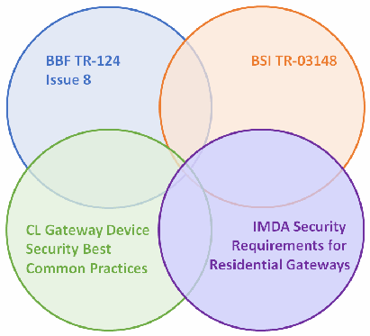
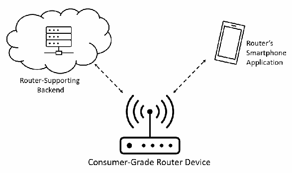

NIST IR 8425A 日本語訳
英語タイトル : Recommended Cybersecurity Requirements for Consumer-Grade Router Products日本語タイトル : 消費者向けルーター製品に推奨されるサイバーセキュリティ要件
公開日 : 2024-09-10
原文URL : https://csrc.nist.gov/pubs/ir/8425/a/final
翻訳編集 : 自動生成（有志による非公式の日本語訳）, 原文取得日 : 2026-10-31, 訳文 : 363 / 364 ブロック
[要約] NIST IR 8425A は、消費者向けルーター製品のサイバーセキュリティ成果と、ルーター標準に基づく関連要件を含む、消費者向けルータープロファイルを提示する報告書です。本書は、Profile of the IoT Core Baseline for Consumer IoT Products, NISTIR 8425 を土台とし、その消費者向け製品ベースラインを、顧客が設置でき、住宅での使用を想定したルーターに特化させたものです。推奨事項は、消費者向けルーター、その製造者、およびエコシステム内の他の支援主体に対する、技術的および非技術的なサイバーセキュリティ成果として示されています。消費者向けルーターのサイバーセキュリティ成果は、関連する標準のより詳細な要件に対応付けられています。
NIST Internal Report
NIST 内部報告書
NIST IR 8425A
NIST IR 8425A
Recommended Cybersecurity Requirements for Consumer-Grade Router Products
消費者向けルーター製品に推奨されるサイバーセキュリティ要件
Michael Fagan Katerina Megas Paul Watrobski Jeffrey Marron Barbara Cuthill David Lemire Brad Hoehn Chris Evans
Michael Fagan Katerina Megas Paul Watrobski Jeffrey Marron Barbara Cuthill David Lemire Brad Hoehn Chris Evans
This publication is available free of charge from: https://doi.org/10.6028/NIST.IR.8425A
本刊行物は次の URL から無料で入手できます: https://doi.org/10.6028/NIST.IR.8425A
NIST Internal Report
NIST 内部報告書
NIST IR 8425A
NIST IR 8425A
Recommended Cybersecurity Requirements for Consumer-Grade Router Products
消費者向けルーター製品に推奨されるサイバーセキュリティ要件
Michael Fagan Katerina Megas Paul Watrobski Jeffrey Marron Barbara Cuthill Applied Cybersecurity Division Information Technology Lab
Michael Fagan Katerina Megas Paul Watrobski Jeffrey Marron Barbara Cuthill 応用サイバーセキュリティ部門 情報技術研究所
David Lemire Brad Hoehn Chris Evans HII
David Lemire Brad Hoehn Chris Evans HII
This publication is available free of charge from: https://doi.org/10.6028/NIST.IR.8425A
本刊行物は次の URL から無料で入手できます: https://doi.org/10.6028/NIST.IR.8425A
September 2024
2024年9月
［米国商務省の紋章。公的な標章のため、この非公式サイトには掲載していません。原本 PDF を参照してください。］
U.S. Department of Commerce Gina M. Raimondo, Secretary
米国商務省 Gina M. Raimondo 長官
National Institute of Standards and Technology
米国国立標準技術研究所
Laurie E. Locascio, NIST Director and Under Secretary of Commerce for Standards and Technology
Laurie E. Locascio、NIST 所長兼商務次官（標準・技術担当）
Certain commercial equipment, instruments, software, or materials, commercial or non-commercial, are identified in this paper in order to specify the experimental procedure adequately. Such identification does not imply recommendation or endorsement of any product or service by NIST, nor does it imply that the materials or equipment identified are necessarily the best available for the purpose.
本稿では、実験手順を適切に特定するために、商用・非商用を問わず、特定の機器、計測器、ソフトウェア、材料を挙げています。こうした特定は、NIST がいかなる製品やサービスも推奨または支持していることを意味せず、挙げた材料や機器がその目的に最適であるとは限らないことも意味しません。
There may be references in this publication to other publications currently under development by NIST in accordance with its assigned statutory responsibilities. The information in this publication, including concepts and methodologies, may be used by federal agencies even before the completion of such companion publications. Thus, until each publication is completed, current requirements, guidelines, and procedures, where they exist, remain operative. For planning and transition purposes, federal agencies may wish to closely follow the development of these new publications by NIST.
本刊行物は、NIST が法令により課された責務に従って現在作成中の他の刊行物に言及している場合があります。概念や方法論を含む本刊行物の情報は、そうした関連刊行物の完成前であっても、連邦政府機関が利用することができます。したがって、各刊行物が完成するまでは、現行の要件、ガイドライン、手順が存在する場合、それらが引き続き有効です。計画および移行のため、連邦機関は、NIST によるこれらの新しい刊行物の策定状況を注意深く追うことを検討してもよいです。
Organizations are encouraged to review all draft publications during public comment periods and provide feedback to NIST. Many NIST cybersecurity publications, other than the ones noted above, are available at https://csrc.nist.gov/publications.
組織には、パブリックコメント期間中にすべてのドラフト刊行物を確認し、NIST にフィードバックを提供することが推奨されています。上記以外の多くの NIST サイバーセキュリティ刊行物は https://csrc.nist.gov/publications で入手できます。
NIST Technical Series Policies
NIST 技術シリーズのポリシー
Copyright, Use, and Licensing Statements
著作権、使用、ライセンスに関する声明
NIST Technical Series Publication Identifier Syntax
NIST 技術シリーズ刊行物の識別子の構文
Publication History
刊行物の履歴
Approved by the NIST Editorial Review Board on 2024-08-30
2024-08-30 に NIST 編集審査委員会によって承認
How to Cite this NIST Technical Series Publication:
本 NIST 技術シリーズ刊行物の引用方法:
Fagan M, Megas K, Watrobski P, Marron J, Cuthill B, Lemire D, Hoehn B, Evans C (2024) Recommended Cybersecurity Requirements for Consumer-Grade Router Products. (National Institute of Standards and Technology, Gaithersburg, MD), NIST Interagency or Internal Report (IR) NIST IR 8425A. https://doi.org/10.6028/NIST.IR.8425A
Fagan M, Megas K, Watrobski P, Marron J, Cuthill B, Lemire D, Hoehn B, Evans C (2024) Recommended Cybersecurity Requirements for Consumer-Grade Router Products. (National Institute of Standards and Technology, Gaithersburg, MD), NIST Interagency or Internal Report (IR) NIST IR 8425A. https://doi.org/10.6028/NIST.IR.8425A
Author ORCID iDs
著者の ORCID iD
Michael Fagan: 0000-0002-1861-2609
Katerina N. Megas: 0000-0002-2815-5448
Paul Watrobski: 0000-0002-6449-3030
Jeffrey Marron: 0000-0002-7871-683X
Barbara B. Cuthill: 0000-0002-2588-6165
Michael Fagan: 0000-0002-1861-2609
Katerina N. Megas: 0000-0002-2815-5448
Paul Watrobski: 0000-0002-6449-3030
Jeffrey Marron: 0000-0002-7871-683X
Barbara B. Cuthill: 0000-0002-2588-6165
Contact Information
連絡先
iotsecurity@nist.gov
iotsecurity@nist.gov
National Institute of Standards and Technology Attn: Applied Cybersecurity Division, Information Technology Laboratory 100 Bureau Drive (Mail Stop 2000) Gaithersburg, MD 20899-2000
National Institute of Standards and Technology Attn: Applied Cybersecurity Division, Information Technology Laboratory 100 Bureau Drive (Mail Stop 2000) Gaithersburg, MD 20899-2000
Additional Information
追加情報
Additional information about this publication is available at https://csrc.nist.gov/pubs/ir/8425/a/final including related content, potential updates, and document history.
本刊行物に関する追加情報（関連コンテンツ、更新の可能性、文書の履歴を含む）は https://csrc.nist.gov/pubs/ir/8425/a/final で入手できます。
All comments are subject to release under the Freedom of Information Act (FOIA).
すべてのコメントは、情報自由法（FOIA）に基づいて公開される場合があります。
Abstract
概要
Ensuring the security of routers is crucial for safeguarding not only individuals’ data but also the integrity and availability of entire networks. With the increasing prevalence of smart home Internet of Things (IoT) devices and remote work setups, the significance of consumer-grade router cybersecurity has expanded, as these devices and applications often rely on routers in the home to connect to the Internet. This report presents the consumer-grade router profile, which includes cybersecurity outcomes for consumer-grade router products and associated requirements from router standards.
ルーターのセキュリティを確保することは、個人のデータだけでなく、ネットワーク全体の完全性と可用性を守るうえでも極めて重要です。スマートホームのモノのインターネット（IoT）デバイスやリモートワークの環境が普及するにつれ、これらのデバイスやアプリケーションが家庭内のルーターを介してインターネットに接続することが多いため、消費者向けルーターのサイバーセキュリティの重要性は高まっています。本報告書は、消費者向けルータープロファイルを提示します。このプロファイルには、消費者向けルーター製品のサイバーセキュリティ成果と、ルーター標準に基づく関連要件が含まれます。
Keywords
キーワード
cybersecurity; consumer-grade routers; network security; Internet of Things
cybersecurity; consumer-grade routers; network security; Internet of Things
Reports on Computer Systems Technology
コンピュータシステム技術に関する報告書
The Information Technology Laboratory (ITL) at the National Institute of Standards and Technology (NIST) promotes the U.S. economy and public welfare by providing technical leadership for the Nation’s measurement and standards infrastructure. ITL develops tests, test methods, reference data, proof of concept implementations, and technical analyses to advance the development and productive use of technology. ITL’s responsibilities include the development of management, administrative, technical, and physical standards and guidelines for the cost-effective security and privacy of other than national security-related information in federal information systems.
米国国立標準技術研究所（NIST）の情報技術研究所（ITL）は、国の計測・標準インフラに技術面でのリーダーシップを提供することで、米国の経済と公共の福祉を促進しています。ITL は、技術の発展と生産的な利用を進めるため、テスト、テスト方法、参照データ、概念実証の実装、技術分析を開発しています。ITL の責務には、連邦情報システムにおける国家安全保障関連以外の情報について、費用対効果の高いセキュリティとプライバシーのための管理上、行政上、技術上、物理上の標準とガイドラインの策定が含まれます。
Audience
対象読者
The intended audience for this report consists of manufacturers of consumer-grade router products (especially product security officers), internet service providers, retailers, and testing and certification bodies interested in establishing minimum cybersecurity requirements for consumer-grade routers.
本報告書の想定読者は、消費者向けルーターに対する最低限のサイバーセキュリティ要件の確立に関心を持つ、消費者向けルーター製品の製造者（特に製品セキュリティ責任者）、インターネットサービスプロバイダー、小売業者、試験・認証機関です。
Patent Disclosure Notice
特許開示に関する通知
NOTICE: ITL has requested that holders of patent claims whose use may be required for compliance with the guidance or requirements of this publication disclose such patent claims to ITL. However, holders of patents are not obligated to respond to ITL calls for patents and ITL has not undertaken a patent search in order to identify which, if any, patents may apply to this publication.
通知: ITL は、本刊行物のガイダンスまたは要件への準拠に使用が必要となる可能性のある特許請求項の保有者に対し、その特許請求項を ITL に開示するよう要請しています。ただし、特許の保有者には ITL の特許照会に応じる義務はなく、ITL は、本刊行物に該当する特許があるかどうかを特定するための特許調査を行っていません。
As of the date of publication and following call(s) for the identification of patent claims whose use may be required for compliance with the guidance or requirements of this publication, no such patent claims have been identified to ITL.
公開日現在、本刊行物のガイダンスまたは要件への準拠に使用が必要となる可能性のある特許請求項の特定を求める照会を行いましたが、そのような特許請求項は ITL に報告されていません。
No representation is made or implied by ITL that licenses are not required to avoid patent infringement in the use of this publication
ITL は、本刊行物の使用にあたって特許侵害を避けるためにライセンスが不要であることを、明示的にも黙示的にも表明するものではありません。
Table of Contents
目次
List of Tables
表の一覧
List of Figures
図の一覧
Executive Summary
エグゼクティブサマリー
This document builds on the Profile of the IoT Core Baseline for Consumer IoT Products, NISTIR 8425 [IR8425]. This document specializes that consumer product baseline for routers intended for residential use that can be installed by the customer, which are referred to as consumer-grade routers.
本書は、Profile of the IoT Core Baseline for Consumer IoT Products, NISTIR 8425 [IR8425] を土台としています。本書は、その消費者向け製品ベースラインを、顧客が設置でき、住宅での使用を想定したルーター（消費者向けルーターと呼ぶ）に特化させたものです。
Similar to NISTIR 8425, these recommendations are stated as technical and non-technical cybersecurity outcomes for consumer-grade routers, their manufacturers, and other supporting entities that may exist within the ecosystem. Cybersecurity outcomes are broad, flexible guidelines for digital products that describe hardware and software capabilities or organizational capabilities that can support cybersecurity when the product is deployed in a customer’s environment. Technical outcomes are those achieved by the product itself, using hardware and software implementations. Non-technical outcomes are those achieved by the product manufacturer and other entities that support the product, usually through the dedication of resources to implement and maintain policies and procedures. To provide additional context and definition, the cybersecurity outcomes for consumer-grade routers are mapped to more detailed requirements in related standards.
NISTIR 8425 と同様に、これらの推奨事項は、消費者向けルーター、その製造者、およびエコシステム内に存在しうる他の支援主体に対する、技術的および非技術的なサイバーセキュリティ成果として示されています。サイバーセキュリティ成果とは、デジタル製品に対する広範で柔軟なガイドラインであり、製品が顧客の環境に展開されたときにサイバーセキュリティを支えうるハードウェアおよびソフトウェアの能力、または組織の能力を表します。技術的成果は、ハードウェアとソフトウェアの実装により、製品自体が達成するものです。非技術的成果は、製品の製造者や製品を支援する他の主体が、通常はポリシーと手順を実装し維持するためにリソースを割り当てることで達成するものです。さらに背景と定義を示すため、消費者向けルーターのサイバーセキュリティ成果は、関連する標準のより詳細な要件に対応付けられています。
In the analysis of the standards and their requirements, NIST found that no single standard addressed all the outcomes fully and found no conflicts in the requirements or how they related to the cybersecurity outcomes. Therefore, NIST recommends the use of multiple standards to fully address consumer-grade router cybersecurity.
標準とその要件を分析した結果、NIST は、成果のすべてを十分に扱う標準は存在しないこと、また、要件間、および要件とサイバーセキュリティ成果との関係に矛盾がないことを確認しました。したがって NIST は、消費者向けルーターのサイバーセキュリティに十分に対処するため、複数の標準を用いることを推奨します。
1. Introduction
1. はじめに
Router cybersecurity is of paramount importance in today's interconnected world, where digital communication plays a central role in both personal and professional spheres. Routers serve as the gatekeepers of our networks, managing the flow of data between devices in the home or office and the internet. A compromised router opens the door to a host of potential exploited vulnerabilities and impacts, ranging from unauthorized access and sensitive information dissemination to the possibility of malicious attacks on connected devices. Ensuring the security of routers is crucial for safeguarding not only individual privacy and safety but also the integrity and availability of entire networks. With the increasing prevalence of smart home IoT products and remote work from home offices, the significance of consumer-grade router cybersecurity has expanded. A secure consumer-grade router not only protects U.S. citizens against data theft and other cyberattacks but also contributes to the overall resilience of the global digital infrastructure. A “consumer-grade router” is a router intended for residential use and can be installed by the customer. Routers forward data packets, most commonly Internet Protocol (IP) packets, between networked systems. Throughout this document, the term “router” is used as a shorthand for “consumer-grade router.” As technology advances, the need for robust router cybersecurity becomes ever more critical to maintain a safe and trustworthy digital environment.
ルーターのサイバーセキュリティは、デジタル通信が個人生活にも職業生活にも中心的な役割を果たす、今日の相互接続された世界において、きわめて重要です。ルーターはネットワークの門番として、家庭やオフィスのデバイスとインターネットとの間のデータの流れを管理しています。ルーターが侵害されると、不正アクセスや機微な情報の拡散から、接続されたデバイスに対する悪意ある攻撃の可能性まで、悪用されるおそれのある脆弱性やさまざまな影響が生じる可能性があります。ルーターのセキュリティを確保することは、個人のプライバシーと安全だけでなく、ネットワーク全体の完全性と可用性を守るうえでも極めて重要です。スマートホームの IoT 製品や在宅オフィスでのリモートワークが普及するにつれ、消費者向けルーターのサイバーセキュリティの重要性は高まっています。安全な消費者向けルーターは、米国市民をデータの窃取などのサイバー攻撃から守るだけでなく、世界のデジタルインフラ全体のレジリエンスにも寄与します。「消費者向けルーター」とは、住宅での使用を想定し、顧客が設置できるルーターです。ルーターは、ネットワーク化されたシステム間でデータパケット（最も一般的にはインターネットプロトコル（IP）パケット）を転送します。本書では、「ルーター」という語を「消費者向けルーター」の略称として用います。技術が進歩するにつれ、安全で信頼できるデジタル環境を維持するための堅牢なルーターのサイバーセキュリティの必要性は、ますます重要になっています。
This report presents a profile, which recommends cybersecurity outcomes for these products and identifies associated requirements from standards. This profile was developed starting from the outcomes defined for consumer IoT products in Profile of the IoT Core Baseline for Consumer IoT Products, NISTIR 8425 [IR8425]. Though developed for consumer IoT products, the NISTIR 8425 outcomes are important cybersecurity guidance for any digital product. Outcomes can be technical (i.e., implemented through hardware and/or software) or non-technical (i.e., implemented as procedures and processes by organizations or individuals). Consistent with the usage of the term “outcome” in NIST IR 8425, outcomes are broad, flexible guidelines that can apply to different use cases, contexts, technologies, etc., while requirements are targeted specifications that can define meeting an outcome for a specific use case, context, technology, etc. The guidance in this document has been developed uniquely for consumer-grade routers using cybersecurity considerations and standards specific to that product type. NIST recommends the use of the following standards and guidance for the cybersecurity of consumer-grade router products:
本報告書は、これらの製品に推奨されるサイバーセキュリティ成果を示し、標準に基づく関連要件を特定するプロファイルを提示します。このプロファイルは、Profile of the IoT Core Baseline for Consumer IoT Products, NISTIR 8425 [IR8425] で消費者向け IoT 製品について定義された成果を出発点として策定されました。NISTIR 8425 の成果は消費者向け IoT 製品のために策定されたものですが、あらゆるデジタル製品にとって重要なサイバーセキュリティのガイダンスです。成果は、技術的（ハードウェアまたはソフトウェアによって実装されるもの）である場合も、非技術的（組織または個人による手順やプロセスとして実装されるもの）である場合もあります。NIST IR 8425 における「成果」の用法と同様に、成果は、さまざまなユースケース、コンテキスト、技術などに適用できる広範で柔軟なガイドラインです。一方、要件は、特定のユースケース、コンテキスト、技術などについて成果を満たすことを定義しうる、的を絞った仕様です。本書のガイダンスは、その製品種別に固有のサイバーセキュリティ上の考慮事項と標準を用いて、消費者向けルーター向けに独自に策定されました。NIST は、消費者向けルーター製品のサイバーセキュリティのために、次の標準とガイダンスの使用を推奨します。
1.Broadband Forum (BBF) TR-124 Issue 8 – Functional Requirements for Broadband Residential Gateway Devices [BBF]
1.Broadband Forum (BBF) TR-124 Issue 8 – Functional Requirements for Broadband Residential Gateway Devices [BBF]
2.CableLabs (CL) Security Gateway Device Security Best Common Practices [CableLabs]
2.CableLabs (CL) Security Gateway Device Security Best Common Practices [CableLabs]
3.Federal Office for Information Security (BSI) TR-03148: Secure Broadband Router – Requirements for secure Broadband Routers [BSI]
3.Federal Office for Information Security (BSI) TR-03148: Secure Broadband Router – Requirements for secure Broadband Routers [BSI]
4.Infocomm Media Development Authority (IMDA) Technical Specification Security Requirements for Residential Gateways [IMDA]
4.Infocomm Media Development Authority (IMDA) Technical Specification Security Requirements for Residential Gateways [IMDA]
5.Platform Firmware Resiliency Guidelines, SP 800-193 [SP800-193]
5.Platform Firmware Resiliency Guidelines, SP 800-193 [SP800-193]
6.Cybersecurity Supply Chain Risk Management Practices for Systems and Organizations, SP 800-161 Rev. 1 [SP800-161r1]
6.Cybersecurity Supply Chain Risk Management Practices for Systems and Organizations, SP 800-161 Rev. 1 [SP800-161r1]
7.Secure Software Development Framework (SSDF) Version 1.1: Recommendations for Mitigating the Risk of Software Vulnerabilities, SP 800-218 [SSDF]
7.Secure Software Development Framework (SSDF) Version 1.1: Recommendations for Mitigating the Risk of Software Vulnerabilities, SP 800-218 [SSDF]
8.Information technology — Security techniques — Vulnerability disclosure processes, ISO/IEC 29147 [ISO29147]
8.Information technology — Security techniques — Vulnerability disclosure processes, ISO/IEC 29147 [ISO29147]
9.Information technology — Security techniques — Vulnerability handling, ISO/IEC 30111 [ISO30111]
9.Information technology — Security techniques — Vulnerability handling, ISO/IEC 30111 [ISO30111]
10.Risk management — Guidelines, ISO 31000 [ISO31000]
10.Risk management — Guidelines, ISO 31000 [ISO31000]
11.Systems and software engineering — Design and development of information for users, ISO/IEC/IEEE 26514 [ISO26514]
11.Systems and software engineering — Design and development of information for users, ISO/IEC/IEEE 26514 [ISO26514]
NIST recommends the use of four existing router standards1 (i.e., items 1 through 4 in the list above). Requirements from these standards focus primarily on the router device, discussing many cybersecurity capabilities appropriate for this equipment. Fig. 1 notionally2 depicts that requirements of the four router standards were mostly unique and had minimal overlap. Few requirements from the different standards repeat, and each standard’s requirements offer useful details about how cybersecurity outcomes can be met and important cybersecurity features to include in consumer-grade router devices. Additional technical requirements for firmware are introduced by SP 800-193 (i.e., item 5). Appendix A provides a crosswalk between technical cybersecurity outcomes for these products and the technical requirements from these five standards.
NIST は、既存の 4 つのルーター標準1（上記リストの 1 番から 4 番）の使用を推奨します。これらの標準の要件は主にルーター機器に焦点を当てており、この機器に適した多くのサイバーセキュリティ機能を論じています。図 1 は、4 つのルーター標準の要件がほとんど固有であり、重複が最小限であることを概念的2に示しています。異なる標準間で繰り返される要件はわずかであり、各標準の要件は、サイバーセキュリティ成果をどのように満たせるか、また消費者向けルーター機器にどのような重要なサイバーセキュリティ機能を含めるべきかについて、有用な詳細を提示しています。ファームウェアに関する追加の技術的要件は、SP 800-193（5 番）によって導入されます。付録 A は、これらの製品に対する技術的なサイバーセキュリティ成果と、これら 5 つの標準の技術的要件との対応表を示します。

4 つの円が少しずつ重なるベン図です。各円のラベルは「BBF TR-124 Issue 8」「BSI TR-03148」「CL Gateway Device Security Best Common Practices」「IMDA Security Requirements for Residential Gateways」です。
Fig. 1. Most requirements from the four consumer-grade router standards do not repeat.
図 1. 4 つの消費者向けルーター標準の要件の大半は重複しません。
The identified requirements from the four router standards address technical cybersecurity for consumer-grade router devices; however, they contain few non-technical cybersecurity requirements and no requirements for cybersecurity for product components other than the router device (e.g., backend3, mobile application). Therefore, additional guidance found in Appendix B items 6 through 11 is recommended to help fill some of those gaps, particularly for non-technical outcomes.
4 つのルーター標準から特定された要件は、消費者向けルーター機器の技術的なサイバーセキュリティを扱っています。しかし、非技術的なサイバーセキュリティ要件はほとんど含まれておらず、ルーター機器以外の製品コンポーネント（たとえばバックエンド3やモバイルアプリケーション）のサイバーセキュリティに関する要件は含まれていません。したがって、これらのギャップ、特に非技術的成果に関するギャップを部分的に埋めるため、付録 B の 6 番から 11 番にあるガイダンスを追加で用いることが推奨されます。
These recommended publications contain a wealth of valuable guidance that, when used by manufacturers, can help improve the cybersecurity and securability of these products. This list is intended as a minimum starting point and may not address all the cybersecurity considerations for every consumer-grade router product. To ensure cybersecurity consideration of all router product components, the Product Development Cybersecurity Handbook [CSWP33] is recommended in addition to the standards and guidance indicated above. If a router product has additional product components, such as a smart phone application, additional technical product cybersecurity capability requirements would also be necessary to meet the outcomes for the complete product. These considerations are discussed generally for digital products in the handbook. As elaborated on in Section 2 of this profile, full support of all outcomes in this profile by all product components is expected. Fig. 2 shows how the standards and guidance listed above relate to cybersecurity outcomes (i.e., the technical vs. non-technical outcomes) and product components (i.e., router device vs. other product components).
これらの推奨刊行物には、製造者が用いることでこれらの製品のサイバーセキュリティとセキュリティ保護可能性を向上させうる、価値あるガイダンスが豊富に含まれています。このリストは最小限の出発点を意図したものであり、あらゆる消費者向けルーター製品のサイバーセキュリティ上の考慮事項をすべて扱っているとは限りません。ルーター製品のすべてのコンポーネントについてサイバーセキュリティを確実に考慮するため、上記の標準とガイダンスに加えて Product Development Cybersecurity Handbook [CSWP33] が推奨されます。ルーター製品にスマートフォンアプリなどの追加の製品コンポーネントがある場合、製品全体として成果を満たすには、技術的な製品サイバーセキュリティ機能要件も追加で必要になります。こうした考慮事項は、このハンドブックではデジタル製品全般について論じられています。本プロファイルの第 2 節で詳述するとおり、本プロファイルのすべての成果を、すべての製品コンポーネントが十分にサポートすることが期待されます。図 2 は、上記の標準とガイダンスが、サイバーセキュリティ成果（技術的成果と非技術的成果）および製品コンポーネント（ルーター機器とその他の製品コンポーネント）とどのように関係するかを示しています。
![Diagram titled "Recommended Support for Consumer-Grade Router Product Cybersecurity Outcomes" with three boxes. "Guidance Supporting Technical Outcomes for Router Devices": BBF Functional Requirements for Broadband Residential Gateway Devices, TR-124 Issue 8; CL Gateway Device Security Best Common Practices; BSI Requirements for secure Broadband Routers, TR-03148; IMDA Security Requirements for Residential Gateways; Platform Firmware Resiliency Guidelines, NIST SP 800-193. "Guidance Supporting Technical Outcomes for Other Router Product Components": Product Development Cybersecurity Handbook, NIST CSWP 33; Platform Firmware Resiliency Guidelines, NIST SP 800-193. "Guidance Supporting Non-Technical Outcomes for Router Products": Information technology — Security techniques — Vulnerability disclosure processes, ISO/IEC 29147; Information technology — Security techniques — Vulnerability handling, ISO/IEC 30111; Systems and software engineering — Design and development of information for users, ISO/IEC/IEEE 26514; Cybersecurity Supply Chain Risk Management Practices for Systems and Organizations, NIST SP 800-161 Rev. 1; Secure Software Development Framework (SSDF) Version 1.1, NIST SP 800-218; Risk management — Guidelines, ISO 31000.](assets/ir-8425a/p0012-figure-01.png)
「Recommended Support for Consumer-Grade Router Product Cybersecurity Outcomes」（消費者向けルーター製品のサイバーセキュリティ成果に対する推奨の支援）と題した図で、3 つの枠があります。「ルーター機器の技術的成果を支えるガイダンス」の枠には、BBF Functional Requirements for Broadband Residential Gateway Devices（TR-124 Issue 8）、CL Gateway Device Security Best Common Practices、BSI Requirements for secure Broadband Routers（TR-03148）、IMDA Security Requirements for Residential Gateways、Platform Firmware Resiliency Guidelines（NIST SP 800-193）が並びます。「ルーター製品のほかの構成要素の技術的成果を支えるガイダンス」の枠には、Product Development Cybersecurity Handbook（NIST CSWP 33）と Platform Firmware Resiliency Guidelines（NIST SP 800-193）が並びます。「ルーター製品の非技術的成果を支えるガイダンス」の枠には、ISO/IEC 29147（脆弱性開示）、ISO/IEC 30111（脆弱性の取り扱い）、ISO/IEC/IEEE 26514（利用者向け情報の設計・開発）、NIST SP 800-161 Rev. 1（サイバーセキュリティサプライチェーンリスク管理）、NIST SP 800-218（SSDF Version 1.1）、ISO 31000（リスクマネジメント）が並びます。
Fig. 2. Recommended guidance documents and standards support cybersecurity outcomes for all parts of consumer-grade router products throughout their development lifecycle.
図 2. 推奨されるガイダンス文書と標準は、開発ライフサイクル全体を通じて、消費者向けルーター製品のすべての部分についてサイバーセキュリティ成果を支えます。
Additionally, manufacturers should look beyond minimal technical requirements for cybersecurity features and consider more robust cybersecurity controls or support when applicable. Section 2.1 of this document provides examples that can improve cybersecurity related to these products.
さらに製造者は、サイバーセキュリティ機能に関する最小限の技術的要件にとどまらず、該当する場合には、より堅牢なサイバーセキュリティ管理策や支援を検討すべきです。本書の 2.1 節は、これらの製品に関するサイバーセキュリティを向上させうる例を示しています。
2. Scope of Consumer-Grade Routers
2. 消費者向けルーターの範囲
This profile identifies minimum cybersecurity for consumer-grade routers. Routers forward data packets, most commonly Internet Protocol (IP) packets, between networked systems. The profile makes no distinction in its cybersecurity recommendations with regards to whether the product is owned by the customer or leased from an internet service provider.
本プロファイルは、消費者向けルーターに対する最低限のサイバーセキュリティを特定します。ルーターは、ネットワーク化されたシステム間でデータパケット（最も一般的にはインターネットプロトコル（IP）パケット）を転送します。本プロファイルのサイバーセキュリティに関する推奨事項は、製品が顧客の所有物であるか、インターネットサービスプロバイダーからのリース品であるかを区別していません。
The cybersecurity outcomes defined in this profile are valuable to manufacturers of consumer-grade routers regardless of how their products end up in a customer’s home. Routers leased from an internet service provider may be managed in part by both the customer and provider. Even in this scenario, the recommended requirements in this profile would be useful to both customers and providers in securing routers. Additional discussion related to this scope can be found in Appendix C.
本プロファイルで定義するサイバーセキュリティ成果は、製品がどのような経緯で顧客の家庭に届くかにかかわらず、消費者向けルーターの製造者にとって価値があります。インターネットサービスプロバイダーからリースされたルーターは、顧客とプロバイダーの両方によって部分的に管理される場合があります。このシナリオでも、本プロファイルの推奨要件は、ルーターのセキュリティ確保において顧客とプロバイダーの双方に役立ちます。この範囲に関する追加の議論は付録 C にあります。
Cybersecurity outcomes and requirements for products should be scoped to include all product components (e.g., smartphone applications) developed to be used with the router device. Fig. 3 below shows an example consumer-grade router product, where the router device is supported by both backend remote services and smartphone application. Third-party applications are not generally considered in the product’s scope, unless designated by the product manufacturer as such. However, the product scope does include any interfaces that create risk for the router product, such as an application programming interface (API) accessible to third-party applications.
製品のサイバーセキュリティ成果と要件は、ルーター機器と併用するために開発されたすべての製品コンポーネント（たとえばスマートフォンアプリ）を含むように範囲を定めるべきです。下の図 3 は消費者向けルーター製品の例を示しており、ルーター機器をバックエンドのリモートサービスとスマートフォンアプリの両方が支えています。サードパーティのアプリケーションは、製品の製造者がそのように指定しない限り、一般に製品の範囲には含まれません。ただし、サードパーティのアプリケーションからアクセスできるアプリケーションプログラミングインターフェース（API）など、ルーター製品にリスクを生じさせるインターフェースは、製品の範囲に含まれます。

消費者向けルーター製品の構成図です。「Consumer-Grade Router Device」（消費者向けルーター機器）が、破線の矢印で「Router-Supporting Backend」（クラウド上のサーバー、ルーターを支えるバックエンド）と「Router's Smartphone Application」（ルーターのスマートフォンアプリケーション）につながっています。
Fig. 3. An example consumer-grade router product that includes a smartphone application and backend server in addition to the router device.
図 3. ルーター機器に加えて、スマートフォンアプリとバックエンドサーバーを含む消費者向けルーター製品の例。
Firmware is a critical foundation of many digital products, including consumer-grade routers and other router product components. Given the central role routers play in home networks, firmware vulnerabilities pose significant cybersecurity concerns. Other software that can access router data and manage the product (e.g., mobile applications or remote backends) also create attack vectors for home consumers if not appropriately mitigated in software and through the software development process.
ファームウェアは、消費者向けルーターやその他のルーター製品コンポーネントを含む、多くのデジタル製品の重要な基盤です。ルーターが家庭内ネットワークで果たす中心的な役割を踏まえると、ファームウェアの脆弱性は重大なサイバーセキュリティ上の懸念をもたらします。ルーターのデータにアクセスして製品を管理できるその他のソフトウェア（モバイルアプリケーションやリモートバックエンドなど）も、ソフトウェアおよびソフトウェア開発プロセスで適切に緩和されなければ、家庭の消費者にとっての攻撃経路となります。
2.1. Cybersecurity Utilizing the Full Product
2.1. 製品全体を活用したサイバーセキュリティ
The standards referenced in Section 1, particularly the four that are specific to consumer-grade routers, reflect general, minimal cybersecurity for this equipment. Router product manufacturers should look beyond these technical requirements for additional security features. The following concepts4 are examples of emerging techniques that may help improve the cybersecurity provided by consumer-grade routers and of the products themselves:
第 1 節で参照した標準、特に消費者向けルーターに固有の 4 つの標準は、この機器に対する一般的で最小限のサイバーセキュリティを反映しています。ルーター製品の製造者は、これらの技術的要件にとどまらず、追加のセキュリティ機能を検討すべきです。次の概念4は、消費者向けルーターおよび製品自体が提供するサイバーセキュリティの向上に役立ちうる、新たな手法の例です。
•Machine-readable asset identification support. Consumer-grade routers serve as a central connection point for networks. Many types of devices will gain access to the local network and usually the internet. Consumer grade routers can be more proactive in managing the cybersecurity of the network when machine-readable asset identifiers are available. While home users could utilize machine-readable asset identification, it is more likely to be useful to small businesses or for routers leased from internet service providers (ISPs). Identification can also go beyond simple inventorying to include device type and firmware version, be extended by concepts like device intent signaling (e.g., the “manufacturer usage description” [MUD]) or be used more directly for the management of router devices’ firmware updates. Machine-readable asset identifiers must be developed and used in ways that are privacy preserving.
•機械可読な資産識別のサポート。消費者向けルーターは、ネットワークの中心的な接続点として機能します。多くの種類のデバイスがローカルネットワークに、通常はインターネットにもアクセスします。機械可読な資産識別子が利用できれば、消費者向けルーターはネットワークのサイバーセキュリティをより能動的に管理できます。家庭のユーザーも機械可読な資産識別を利用できますが、小規模事業者や、インターネットサービスプロバイダー（ISP）からリースされたルーターでより有用である可能性が高いです。識別は、単純なインベントリを超えて、デバイスの種類やファームウェアのバージョンを含めることもできます。また、デバイスの意図のシグナリング（たとえば「製造者使用記述（manufacturer usage description）」[MUD]）といった概念によって拡張したり、ルーター機器のファームウェア更新の管理により直接的に用いたりすることもできます。機械可読な資産識別子は、プライバシーを保護する方法で開発し、使用しなければなりません。
•Interface and functionality minimization for consumer-grade router devices. “Secure-by-design” principles [SecureByDesign] applied to consumer-grade routers should guide manufacturers to minimize the number of interfaces, both logical and physical and general functionality provided by the router device. The primary functionality of the home router is to provide access to the Internet for devices within the home. Extraneous functions should not be included in this component. For example, configuration may be better managed by another product component (e.g., mobile application). This is not to suggest a product composed of only a router device is necessarily less secure than those that can offload functions to other components..
•消費者向けルーター機器のインターフェースと機能の最小化。消費者向けルーターに適用される「セキュア・バイ・デザイン」の原則 [SecureByDesign] は、製造者がルーター機器の提供するインターフェース（論理的なものと物理的なものの両方）の数と、機能全般を最小化する指針となるべきです。家庭用ルーターの主な機能は、家庭内のデバイスにインターネットへのアクセスを提供することです。この構成要素に、無関係な機能を含めるべきではありません。たとえば、構成は別の製品コンポーネント（モバイルアプリケーションなど）で管理するほうがよい場合があります。これは、ルーター機器のみで構成される製品が、機能を他のコンポーネントに任せられる製品より必ずしもセキュリティが低いことを示唆するものではありません。
•Robust network onboarding support from consumer-grade router products. Cybersecurity when provisioning new devices to the network connected to a consumer-grade router can go beyond a single password. When a router product is composed of components such as mobile applications or backends, those components can be used as part of a more robust onboarding mechanism. For example, when a device is attempting to connect to the router device with (or without) the password, the mobile application can notify the owner and ask for explicit approval for the device to onboard. Though reliability needs to be considered to ensure individuals can always access and use their routers, onboarding mechanisms for consumer-grade routers that give individuals more access control over their networks is generally beneficial. For additional recommendations on consumer IoT onboarding and device credentialing see Trusted Internet of Things (IoT) Device Network-Layer Onboarding and Lifecycle Management: Enhancing Internet Protocol-Based IoT Device and Network [SP1800-36].
•消費者向けルーター製品による堅牢なネットワークオンボーディングのサポート。消費者向けルーターに接続されたネットワークに新しいデバイスをプロビジョニングする際のサイバーセキュリティは、単一のパスワードにとどまらない形にできます。ルーター製品がモバイルアプリケーションやバックエンドなどのコンポーネントで構成されている場合、それらのコンポーネントをより堅牢なオンボーディングの仕組みの一部として使用できます。たとえば、デバイスがパスワードを使って（または使わずに）ルーター機器に接続しようとしたときに、モバイルアプリケーションが所有者に通知し、そのデバイスのオンボーディングについて明示的な承認を求めることができます。個人がいつでもルーターにアクセスして使用できるよう、信頼性を考慮する必要はありますが、消費者向けルーターのオンボーディングの仕組みによって個人がネットワークに対するアクセス制御をより強く持てるようにすることは、一般に有益です。消費者向け IoT のオンボーディングとデバイスのクレデンシャル付与に関する追加の推奨事項は、Trusted Internet of Things (IoT) Device Network-Layer Onboarding and Lifecycle Management: Enhancing Internet Protocol-Based IoT Device and Network [SP1800-36] を参照してください。
•Multiple signatures for software update packages when possible. At a minimum, all software update packages should be signed by the source of the update (e.g., manufacturer). When applicable (e.g., when routers are leased from internet service providers (ISPs) other entities, such as the owning ISP, may also cryptographically sign updates, adding another layer of security. Routers would only apply a software update if the cryptographic signatures from both the manufacturer and ISP are verified. Co-signing by the ISP also gives the ISP a mechanism to manage the acceptance of software updates.
•可能な場合の、ソフトウェア更新パッケージへの複数の署名。最低限、すべてのソフトウェア更新パッケージは、更新の提供元（たとえば製造者）によって署名されるべきです。該当する場合（たとえばルーターがインターネットサービスプロバイダー（ISP）からリースされる場合）、所有者である ISP などの他の主体も更新に暗号技術による署名を行うことで、セキュリティの層を追加できます。ルーターは、製造者と ISP の両方の暗号署名が検証された場合にのみ、ソフトウェア更新を適用します。ISP による共同署名は、ISP にソフトウェア更新の受け入れを管理する仕組みも与えます。
•Robust security for protecting logs of captured cybersecurity state information. Cybersecurity State Awareness, documented in Appendix A, is essential for detecting compromised routers. Because logs can be a valuable tool for security researchers and others performing forensic analysis of cybersecurity incidents, this data needs to be stored securely. Protections that can enhance router log security include encrypting and password protecting logs to ensure that access is limited to authorized personnel only, use of non-volatile memory storage for logs, off-device storage for logged data, and restricting log deletion.
•取得したサイバーセキュリティ状態情報のログを保護する堅牢なセキュリティ。付録 A に記載のサイバーセキュリティ状態の認識は、危殆化したルーターを検知するうえで不可欠です。ログは、セキュリティ研究者やその他の者がサイバーセキュリティインシデントのフォレンジック分析を行う際の貴重なツールとなりうるため、このデータは安全に保存する必要があります。ルーターのログのセキュリティを高められる保護策には、ログを暗号化しパスワードで保護して認可された担当者だけがアクセスできるようにすること、ログに不揮発性メモリを使用すること、ログデータを機器外に保存すること、ログの削除を制限することがあります。
Several of these examples highlight ways consumer-grade router products can use multiple techniques to deliver cybersecurity capabilities. Manufacturers should consider these and other techniques to continually improve router cybersecurity as risks shift and new mitigations become available.
これらの例のいくつかは、消費者向けルーター製品が複数の手法を用いてサイバーセキュリティ機能を提供できることを示しています。製造者は、リスクの変化や新たな緩和策の登場に応じてルーターのサイバーセキュリティを継続的に向上させるため、これらの手法やその他の手法を検討すべきです。
3. Conclusion
3. 結論
This consumer-grade router profile can help manufacturers determine appropriate cybersecurity to incorporate as they develop their products. These recommendations draw from current effective practices and promote the adoption of accepted and vetted cybersecurity features for router products. The outcomes, requirements, and standards referenced here should not be viewed as precluding the use of additional forward-looking requirements such as those discussed in Section 2.1.
この消費者向けルータープロファイルは、製造者が製品を開発する際に組み込むべき適切なサイバーセキュリティを判断するうえで役立ちます。これらの推奨事項は現在の有効な実践に基づいており、ルーター製品について、受け入れられ検証されたサイバーセキュリティ機能の採用を促進します。ここで参照する成果、要件、標準は、2.1 節で論じたような、将来を見据えた追加要件の使用を妨げるものと見なすべきではありません。
As with any NIST report, as the standards and effective practices referenced change over time, NIST may revisit this document and revise it. NIST welcomes ongoing feedback and recommendations from the community regarding standards, effective practices, and solutions for consumer-grade routers. That said, NIST encourages readers to identify if the standards referenced here have been updated asynchronously from this report. NIST reiterates the importance of a product-wide perspective to develop a comprehensive approach to providing cybersecurity for consumer-grade router products.
あらゆる NIST 報告書と同様に、参照する標準や有効な実践が時間とともに変化するのに伴い、NIST は本書を見直し、改訂する場合があります。NIST は、消費者向けルーターの標準、有効な実践、ソリューションに関するコミュニティからの継続的なフィードバックと提言を歓迎します。そのうえで NIST は、読者に対し、ここで参照する標準が本報告書とは非同期に更新されているかを確認することを推奨します。NIST は、消費者向けルーター製品のサイバーセキュリティを提供する包括的なアプローチを築くうえで、製品全体を見渡す視点が重要であることを改めて強調します。
References
参考文献
[WHAnnouncement] White House (2023) Biden-Harris Administration Announces Cybersecurity Labeling Program for Smart Devices to Protect American Consumers. (White House, Washington, DC). https://www.whitehouse.gov/briefing-room/statements-releases/2023/07/18/biden-harris-administration-announces-cybersecurity-labeling-program-for-smart-devices-to-protect-american-consumers/
[WHAnnouncement] White House (2023) Biden-Harris Administration Announces Cybersecurity Labeling Program for Smart Devices to Protect American Consumers. (White House, Washington, DC). https://www.whitehouse.gov/briefing-room/statements-releases/2023/07/18/biden-harris-administration-announces-cybersecurity-labeling-program-for-smart-devices-to-protect-american-consumers/
[IR8425] Fagan M, Megas KN, Watrobski P, Marron J, Cuthill B (2022) Profile of the IoT Core Baseline for Consumer IoT Products. (National Institute of Standards and Technology, Gaithersburg, MD), NIST Interagency or Internal Report (IR) NIST IR 8425. https://doi.org/10.6028/NIST.IR.8425
[IR8425] Fagan M, Megas KN, Watrobski P, Marron J, Cuthill B (2022) Profile of the IoT Core Baseline for Consumer IoT Products. (National Institute of Standards and Technology, Gaithersburg, MD), NIST Interagency or Internal Report (IR) NIST IR 8425. https://doi.org/10.6028/NIST.IR.8425
[BBF] Walls, J, Editor (2022) Functional Requirements for Broadband Residential Gateway Devices. (Broadband Forum, Fremont, CA), Technical Report (TR) 124, Issue 8. https://www.broadband-forum.org/pdfs/tr-124-8-0-0.pdf
[BBF] Walls, J, Editor (2022) Functional Requirements for Broadband Residential Gateway Devices. (Broadband Forum, Fremont, CA), Technical Report (TR) 124, Issue 8. https://www.broadband-forum.org/pdfs/tr-124-8-0-0.pdf
[CableLabs] CableLabs Security (2021) Gateway Device Security Best Common Practices. (CableLabs, Louisville, CO), CL-GL-GDS-BCP-V01-211007. https://community.cablelabs.com/wiki/plugins/servlet/cablelabs/alfresco/download?id=1209eea3-bd81-40cb-9a18-21bd6cfcd80d
[CableLabs] CableLabs Security (2021) Gateway Device Security Best Common Practices. (CableLabs, Louisville, CO), CL-GL-GDS-BCP-V01-211007. https://community.cablelabs.com/wiki/plugins/servlet/cablelabs/alfresco/download?id=1209eea3-bd81-40cb-9a18-21bd6cfcd80d
[BSI] Federal Office for Information Security (2023) Secure Broadband Router: Requirements for Secure Broadband Routers. (Federal Office for Information Security, Bonn, Germany), BSI Technical Report (TR) 03148. https://www.bsi.bund.de/EN/Themen/Unternehmen-und-Organisationen/Standards-und-Zertifizierung/Technische-Richtlinien/TR-nach-Thema-sortiert/tr03148/tr-03148.html
[BSI] Federal Office for Information Security (2023) Secure Broadband Router: Requirements for Secure Broadband Routers. (Federal Office for Information Security, Bonn, Germany), BSI Technical Report (TR) 03148. https://www.bsi.bund.de/EN/Themen/Unternehmen-und-Organisationen/Standards-und-Zertifizierung/Technische-Richtlinien/TR-nach-Thema-sortiert/tr03148/tr-03148.html
[IMDA] Info-communications Media Development Authority of Singapore (2020) Security Requirements for Residential Gateways. (Info-communications Media Development Authority, Singapore), IMDA Technical Specification (TS) RG-SEC. https://www.imda.gov.sg/-/media/imda/files/regulation-licensing-and-consultations/ict-standards/telecommunication-standards/radio-comms/imda-ts-rg-sec.pdf
[IMDA] Info-communications Media Development Authority of Singapore (2020) Security Requirements for Residential Gateways. (Info-communications Media Development Authority, Singapore), IMDA Technical Specification (TS) RG-SEC. https://www.imda.gov.sg/-/media/imda/files/regulation-licensing-and-consultations/ict-standards/telecommunication-standards/radio-comms/imda-ts-rg-sec.pdf
[SP800-193] Regenscheid, AR (2018) Platform Firmware Resiliency Guidelines. (National Institute of Standards and Technology, Gaithersburg, MD), NIST Special Publication (SP) 800-193. https://doi.org/10.6028/NIST.SP.800-193
[SP800-193] Regenscheid, AR (2018) Platform Firmware Resiliency Guidelines. (National Institute of Standards and Technology, Gaithersburg, MD), NIST Special Publication (SP) 800-193. https://doi.org/10.6028/NIST.SP.800-193
[SP800-161r1] Boyens JM, Smith AM, Bartol N, Winkler K, Holbrook A, Fallon M (2022) Cybersecurity Supply Chain Risk Management Practices for Systems and Organizations. (National Institute of Standards and Technology, Gaithersburg, MD), NIST Special Publication (SP) 800-161r1. https://doi.org/10.6028/NIST.SP.800-161r1
[SP800-161r1] Boyens JM, Smith AM, Bartol N, Winkler K, Holbrook A, Fallon M (2022) Cybersecurity Supply Chain Risk Management Practices for Systems and Organizations. (National Institute of Standards and Technology, Gaithersburg, MD), NIST Special Publication (SP) 800-161r1. https://doi.org/10.6028/NIST.SP.800-161r1
[SSDF] Souppaya MP, Scarfone KA, Dodson DF (2022) Secure Software Development Framework (SSDF) Version 1.1: Recommendations for Mitigating the Risk of Software Vulnerabilities. (National Institute of Standards and Technology, Gaithersburg, MD), NIST Special Publication (SP) 800-218. https://doi.org/10.6028/NIST.SP.800-218
[SSDF] Souppaya MP, Scarfone KA, Dodson DF (2022) Secure Software Development Framework (SSDF) Version 1.1: Recommendations for Mitigating the Risk of Software Vulnerabilities. (National Institute of Standards and Technology, Gaithersburg, MD), NIST Special Publication (SP) 800-218. https://doi.org/10.6028/NIST.SP.800-218
[ISO29147] International Organization for Standardization (2018) Information technology — Security techniques — Vulnerability disclosure. (ISO Standard No. 29147:2018). https://www.iso.org/standard/72311.html
[ISO29147] International Organization for Standardization (2018) Information technology — Security techniques — Vulnerability disclosure. (ISO Standard No. 29147:2018). https://www.iso.org/standard/72311.html
[ISO30111] International Organization for Standardization (2019) Information technology — Security techniques — Vulnerability handling processes. (ISO Standard No. 30111:2019). https://www.iso.org/standard/69725.html
[ISO30111] International Organization for Standardization (2019) Information technology — Security techniques — Vulnerability handling processes. (ISO Standard No. 30111:2019). https://www.iso.org/standard/69725.html
[ISO31000] International Organization for Standardization (2018) Risk management — Guidelines. (ISO Standard No. 31000:2018). https://www.iso.org/standard/65694.html
[ISO31000] International Organization for Standardization (2018) Risk management — Guidelines. (ISO Standard No. 31000:2018). https://www.iso.org/standard/65694.html
[ISO26514] International Organization for Standardization (2022) Systems and software engineering — Design and development of information for users. (ISO Standard No. 26514:2022). https://www.iso.org/standard/77451.html
[ISO26514] International Organization for Standardization (2022) Systems and software engineering — Design and development of information for users. (ISO Standard No. 26514:2022). https://www.iso.org/standard/77451.html
[CSWP33] Fagan M, Megas KN, Watrobski P, Marron J, Cuthill B, Lemire D, Hoehn B (2024). Product Development Cybersecurity Handbook: Concepts and Considerations for IoT Product Manufacturers. (National Institute of Standards and Technology, Gaithersburg, MD), Draft NIST Cybersecurity White Paper (CSWP) 33. https://doi.org/10.6028/NIST.CSWP.33.ipd
[CSWP33] Fagan M, Megas KN, Watrobski P, Marron J, Cuthill B, Lemire D, Hoehn B (2024). Product Development Cybersecurity Handbook: Concepts and Considerations for IoT Product Manufacturers. (National Institute of Standards and Technology, Gaithersburg, MD), Draft NIST Cybersecurity White Paper (CSWP) 33. https://doi.org/10.6028/NIST.CSWP.33.ipd
[SecureByDesign] Cybersecurity and Infrastructure Security Agency (2023). Secure-by-Design Shifting the Balance of Cybersecurity Risk: Principles and Approaches for Secure by Design Software. (Cybersecurity and Infrastructure Security, Washington, DC). https://www.cisa.gov/sites/default/files/2023-10/SecureByDesign_1025_508c.pdf
[SecureByDesign] Cybersecurity and Infrastructure Security Agency (2023). Secure-by-Design Shifting the Balance of Cybersecurity Risk: Principles and Approaches for Secure by Design Software. (Cybersecurity and Infrastructure Security, Washington, DC). https://www.cisa.gov/sites/default/files/2023-10/SecureByDesign_1025_508c.pdf
[MUD] Lear E, Droms R, Romascano D (2019) Manufacturer Usage Description Specification. (Internet Engineering Taskforce), IETF Request for Comments (RFC) 8520. https://datatracker.ietf.org/doc/html/rfc8520
[MUD] Lear E, Droms R, Romascano D (2019) Manufacturer Usage Description Specification. (Internet Engineering Taskforce), IETF Request for Comments (RFC) 8520. https://datatracker.ietf.org/doc/html/rfc8520
[SP1800-36] Fagan, M., Marron, J., Watrobski, P., Souppaya, M., et al. (2023) Trusted Internet of Things (IoT) Device Network-Layer Onboarding and Lifecycle Management: Enhancing Internet Protocol-Based IoT Device and Network Security. (National Institute of Standards and Technology, Gaithersburg, MD), Draft NIST Special Publication (NIST SP) 1800-36.
[SP1800-36] Fagan, M., Marron, J., Watrobski, P., Souppaya, M., et al. (2023) Trusted Internet of Things (IoT) Device Network-Layer Onboarding and Lifecycle Management: Enhancing Internet Protocol-Based IoT Device and Network Security. (National Institute of Standards and Technology, Gaithersburg, MD), Draft NIST Special Publication (NIST SP) 1800-36.
[SP800-40r4] Souppaya MP, Scarfone KA (2022) Guide to Enterprise Patch Management Planning: Preventive Maintenance for Technology. (National Institute of Standards and Technology, Gaithersburg, MD), NIST Special Publication (SP) 800-40, Rev. 4. https://doi.org/10.6028/NIST.SP.800-40r4
[SP800-40r4] Souppaya MP, Scarfone KA (2022) Guide to Enterprise Patch Management Planning: Preventive Maintenance for Technology. (National Institute of Standards and Technology, Gaithersburg, MD), NIST Special Publication (SP) 800-40, Rev. 4. https://doi.org/10.6028/NIST.SP.800-40r4
[RFC6092] Woodyatt, J, Editor (2011) Recommended Simple Security Capabilities in Customer Premises Equipment (CPE) for Providing Residential IPv6 Internet Service. (Internet Engineering Task Force), IETF Request for Comment (RFC) 6092. https://datatracker.ietf.org/doc/html/rfc6092
[RFC6092] Woodyatt, J, Editor (2011) Recommended Simple Security Capabilities in Customer Premises Equipment (CPE) for Providing Residential IPv6 Internet Service. (Internet Engineering Task Force), IETF Request for Comment (RFC) 6092. https://datatracker.ietf.org/doc/html/rfc6092
[IR8320] Bartock MJ, Souppaya MP, Savino R, Knoll T, Shetty U, Cherfaoui M, Yeluri R, Malhotra A, Banks D, Jordan M, Pendarakis D, Rao JR, Romness P, Scarfone KA (2022) Hardware-Enabled Security: Enabling a Layered Approach to Platform Security for Cloud and Edge Computing Use Cases. (National Institute of Standards and Technology, Gaithersburg, MD), NIST Interagency or Internal Report (IR) 8320. https://doi.org/10.6028/NIST.IR.8320
[IR8320] Bartock MJ, Souppaya MP, Savino R, Knoll T, Shetty U, Cherfaoui M, Yeluri R, Malhotra A, Banks D, Jordan M, Pendarakis D, Rao JR, Romness P, Scarfone KA (2022) Hardware-Enabled Security: Enabling a Layered Approach to Platform Security for Cloud and Edge Computing Use Cases. (National Institute of Standards and Technology, Gaithersburg, MD), NIST Interagency or Internal Report (IR) 8320. https://doi.org/10.6028/NIST.IR.8320
[SP800-37r2] Joint Task Force (2018) Risk Management Framework for Information Systems and Organizations: A System Life Cycle Approach for Security and Privacy. (National Institute of Standards and Technology, Gaithersburg, MD), NIST Special Publication (SP) 800-37, Rev. 2. https://doi.org/10.6028/NIST.SP.800-37r2
[SP800-37r2] Joint Task Force (2018) Risk Management Framework for Information Systems and Organizations: A System Life Cycle Approach for Security and Privacy. (National Institute of Standards and Technology, Gaithersburg, MD), NIST Special Publication (SP) 800-37, Rev. 2. https://doi.org/10.6028/NIST.SP.800-37r2
[RFC6092] Woodyatt J, Ed. (2011) Recommended Simple Security Capabilities in Customer Premises Equipment (CPE) for Providing Residential IPv6 Internet Service. (Internet Engineering Taskforce), IETF Request for Comments (RFC) 6029. https://datatracker.ietf.org/doc/rfc6092/
[RFC6092] Woodyatt J, Ed. (2011) Recommended Simple Security Capabilities in Customer Premises Equipment (CPE) for Providing Residential IPv6 Internet Service. (Internet Engineering Taskforce), IETF Request for Comments (RFC) 6029. https://datatracker.ietf.org/doc/rfc6092/
[ParksRouterResearch] Parks Associates (2022) Parks Associates: 52% of Consumers Acquired Their Routers From Their ISP. (PRNewswire, Dallas, TX). https://www.prnewswire.com/news-releases/parks-associates-52-of-consumers-acquired-their-routers-from-their-isp-301593338.html
[ParksRouterResearch] Parks Associates (2022) Parks Associates: 52% of Consumers Acquired Their Routers From Their ISP. (PRNewswire, Dallas, TX). https://www.prnewswire.com/news-releases/parks-associates-52-of-consumers-acquired-their-routers-from-their-isp-301593338.html
Appendix A. Crosswalk between Technical Outcomes and Consumer-Grade Router Cybersecurity and Firmware Requirements
付録 A. 技術的成果と消費者向けルーターのサイバーセキュリティおよびファームウェア要件との対応表
This Appendix provides additional information about how the requirements from the four router standards relate to the consumer-grade router profile outcomes. Organizations can use this informative crosswalk to understand how the technical standards relate to cybersecurity concepts identified in higher-level technical cybersecurity outcomes for router products. This is not normative guidance. As an informative crosswalk, the profile is at the level of outcomes not detailed requirements. Further detailed requirements can be found in the referenced standards. Additionally, the technical outcomes can serve as a guide for manufacturers as they consider cybersecurity for a full product as described in Section 2.
この付録は、4つのルーター標準の要件が消費者向けルーターのプロファイル成果とどのように関係するかについて、追加情報を示します。組織は、この参考情報としての対応表を用いて、技術標準が、ルーター製品に関する上位レベルの技術的サイバーセキュリティ成果で特定されているサイバーセキュリティ概念とどのように関係するかを理解できます。これは規範的なガイダンスではありません。参考情報としての対応表であるため、プロファイルは詳細な要件ではなく成果のレベルで示されています。より詳細な要件は、参照先の標準に記載されています。さらに、技術的成果は、製造者が第2節で説明されている製品のサイバーセキュリティを検討する際の指針となります。
Sections A.1 to A.7 below show which requirements from the four standards relate to the technical outcomes. Each subsection from A.1 to A.7 states the high-level outcome along with each sub-outcome that defines the high-level outcome. The language for the cybersecurity outcomes was developed by modifying the outcomes from NISTIR 8425. Two new sub-outcomes were also added based on review of the standards. These are noted with a †.
以下の A.1 から A.7 の各節は、4 つの標準のどの要件が技術的成果に関係するかを示します。A.1 から A.7 の各小節は、上位の成果と、その上位の成果を定義する各副成果を記述します。サイバーセキュリティ成果の記述は、NISTIR 8425 の成果を修正して作成しました。標準の確認に基づき、新たな副成果も 2 つ追加しました。これらは † で示しています。
For each sub-outcome, a set of related requirements from the four standards is also included. The abbreviations used for the standards are:
各副成果には、4 つの標準の関連要件の一覧も含まれています。標準の略称は次のとおりです。
BBF’s TR-124 Issue 8 [BBF]
BBF の TR-124 Issue 8 [BBF]
CL’s Security Gateway Device Security Best Common Practices [CableLabs]
CL’s Security Gateway Device Security Best Common Practices [CableLabs]
BSI’s Secure Broadband Routers [BSI]
BSI の Secure Broadband Routers [BSI]
IMDA’s Security Requirements for Residential Gateways [IMDA]
IMDA の Security Requirements for Residential Gateways [IMDA]
NIST recommends using Special Publication 800-193 [SP800-193] to develop firmware for router products and their components. Section 4 of that document details technical cybersecurity capabilities to help mitigate firmware vulnerabilities. These capabilities support the outcomes for consumer-grade router products defined in this document. Thus, in addition to the four standards, requirements from Section 4 of SP 800-193 are also included in the following sub-sections when applicable.
NIST は、ルーター製品とそのコンポーネントのファームウェアを開発するために、Special Publication 800-193 [SP800-193] を使用することを推奨します。同書の第 4 節は、ファームウェアの脆弱性の緩和に役立つ技術的なサイバーセキュリティ機能を詳述しています。これらの機能は、本書で定義する消費者向けルーター製品の成果を支えます。そのため、4 つの標準に加えて、SP 800-193 の第 4 節の要件も、該当する場合は以下の各小節に含めています。
Finally, for some outcomes and sub-outcomes, commentary is also included indicating example cybersecurity enhancements of consumer-grade router products that may go beyond what is reflected in the current standards or may not be applicable to all router products but should be considered by router product manufacturers.
最後に、一部の成果と副成果には、消費者向けルーター製品のサイバーセキュリティ強化の例を示す解説も含まれています。これらの強化は、現行の標準に反映された内容を超える場合や、すべてのルーター製品には適用できない場合がありますが、ルーター製品の製造者が検討すべきものです。
A.1. Asset Identification
A.1. 資産の識別
The consumer-grade router product is uniquely identifiable and inventories all of the consumer-grade router product’s components.
消費者向けルーター製品は一意に識別可能であり、消費者向けルーター製品のすべてのコンポーネントをインベントリ化しています。
A.1.1. Asset Identification 1
A.1.1. 資産の識別 1
The consumer-grade router product can be uniquely identified by the customer and other authorized entities via means including but not limited to: host name, service set identifier (SSID), and serial number.
消費者向けルーター製品は、ホスト名、サービスセット識別子（SSID）、シリアル番号などの手段により、顧客およびその他の認可された主体が一意に識別できます。
Related Standards Requirements:
関連する標準の要件:
BBF GEN.DESIGN.12, GEN.DESIGN.13, MGMT.LOCAL.20, IF.LAN.WIRELESS.AP.20
BBF GEN.DESIGN.12, GEN.DESIGN.13, MGMT.LOCAL.20, IF.LAN.WIRELESS.AP.20
CL OOB-011, KEY-006, OOB-007
CL OOB-011, KEY-006, OOB-007
BSI (3.1.2.1)
BSI (3.1.2.1)
IMDA None
IMDA なし
A.1.2. Asset Identification 2
A.1.2. 資産の識別 2
The consumer-grade router product uniquely identifies each product component (e.g., router device, mobile app) and maintains an up-to-date inventory of connected product components.
消費者向けルーター製品は、各製品コンポーネント（たとえばルーター機器、モバイルアプリ）を一意に識別し、接続された製品コンポーネントの最新のインベントリを維持します。
No requirements from the standards were mapped to this outcome. Products composed of only a router device would meet this outcome by default. When a product is composed of other components (e.g., mobile application, backend), those components may need to support this outcome.
この成果に対応付けられた標準の要件はありません。ルーター機器のみで構成される製品は、本来的にこの成果を満たします。製品が他のコンポーネント（モバイルアプリケーション、バックエンドなど）で構成される場合、それらのコンポーネントがこの成果をサポートする必要がある場合があります。
The asset identification outcome is focused on the ability to identify the router and the router’s management of its product components, but routers may also assist customers in managing their connected devices. Machine-readable asset identifiers for all connected products could enable routers to use these identifiers for the purpose of asset management in support of customers’ cybersecurity.
資産の識別という成果は、ルーターを識別する能力と、ルーターによる自身の製品コンポーネントの管理に焦点を当てていますが、ルーターは、顧客が接続されたデバイスを管理するのを支援することもできます。接続されたすべての製品の機械可読な資産識別子があれば、ルーターは、顧客のサイバーセキュリティを支えるための資産管理の目的で、これらの識別子を使用できるようになります。
A.2. Product Configuration
A.2. 製品の構成
The configuration of the consumer-grade router product is changeable, there is the ability to restore a secure default setting, and any and all changes can only be performed by authorized individuals, services, and other product components.
消費者向けルーター製品の構成は変更可能であり、安全なデフォルト設定に復元する能力があり、あらゆる変更は、認可された個人、サービス、およびその他の製品コンポーネントのみが行えます。
Configuration control of networking equipment, including router products is critical to network cybersecurity. If possible, configuration may be better managed by another product component (e.g., mobile application) to minimize interfaces (and, thus, attack surface) of the router device specifically.
ルーター製品を含むネットワーク機器の構成管理は、ネットワークのサイバーセキュリティにとって重要です。可能であれば、構成は別の製品コンポーネント（たとえばモバイルアプリケーション）で管理するほうが、ルーター機器自体のインターフェース（ひいては攻撃対象領域）を最小化するうえでよい場合があります。
A.2.3. Product Configuration 1
A.2.3. 製品の構成 1
Utilizing strong authentication mechanisms (e.g., multi-factor authentication), authenticated and authorized individuals (e.g., customer, ISP), services, and other product components can access the consumer-grade router product’s configuration interfaces (e.g., administration page) and change the configuration settings.
強力な認証メカニズム（たとえば多要素認証）を利用し、認証され認可された個人（たとえば顧客、ISP）、サービス、およびその他の製品コンポーネントが、消費者向けルーター製品の構成インターフェース（たとえば管理ページ）にアクセスし、構成設定を変更できます。
Related Standards Requirements:
関連する標準の要件:
BBF MGMT.LOCAL.2
BBF MGMT.LOCAL.2
CL OOB-007, DE-007, MI-002, MI-010, MI-011
CL OOB-007, DE-007, MI-002, MI-010, MI-011
BSI (3.1.2) (4), (4.1.1), (4.1.2), (4.2), (4.3), (4.4), (4.5), (4.8), (4.9), (4.10)
BSI (3.1.2) (4), (4.1.1), (4.1.2), (4.2), (4.3), (4.4), (4.5), (4.8), (4.9), (4.10)
IMDA 4.2, 4.2.3, 4.4
IMDA 4.2, 4.2.3, 4.4
A.2.4. Product Configuration 2
A.2.4. 製品の構成 2
Authorized individuals (i.e., customer), services, and other consumer-grade router product components have the ability to restore (i.e., factory reset) the router product to a secure default (i.e., uninitialized) configuration. In restoring the product to a secure default, all settings and data must be deleted.
認可された個人（顧客）、サービス、およびその他の消費者向けルーター製品コンポーネントは、ルーター製品を安全なデフォルト（未設定）構成に復元（工場出荷時設定へのリセット）する能力を持ちます。製品を安全なデフォルトに復元する際には、すべての設定とデータを削除しなければなりません。
Related Standards Requirements:
関連する標準の要件:
BBF MGMT.LOCAL.10
BBF MGMT.LOCAL.10
CL OOB-009, DE-003, DE-004, DE-006
CL OOB-009, DE-003, DE-004, DE-006
BSI (4.6)
BSI (4.6)
IMDA 4.1.1, 4.2.1, 4.2.3
IMDA 4.1.1, 4.2.1, 4.2.3
SP 800-193 4.2.4(5), 4.4.2(5)
SP 800-193 4.2.4(5), 4.4.2(5)
A.2.5. Product Configuration 3
A.2.5. 製品の構成 3
The consumer-grade router product applies configuration settings to applicable router product components.
消費者向けルーター製品は、該当するルーター製品コンポーネントに構成設定を適用します。
No requirements from the consumer-grade router standards were mapped to this outcome. Consumer-grade router products composed of only a router device would natively meet this outcome via configuration on the device itself. When a router product is composed of other components (e.g., mobile application, backend), those components may need to support this outcome.
消費者向けルーター標準の要件は、この成果に対応付けられていません。ルーター機器のみで構成される消費者向けルーター製品は、機器自体の構成によって、本来的にこの成果を満たします。ルーター製品が他のコンポーネント（モバイルアプリケーション、バックエンドなど）で構成される場合、それらのコンポーネントがこの成果をサポートする必要がある場合があります。
A.3. Data Protection
A.3. データ保護
The consumer-grade router product protects data stored across all router product components and transmitted both between product components and outside the router product from unauthorized access, disclosure, and modification using strong encryption (e.g., FIPS-approved algorithms).
消費者向けルーター製品は、すべてのルーター製品コンポーネントにわたって保存されるデータ、および製品コンポーネント間やルーター製品の外部へ送信されるデータを、強力な暗号化（たとえば FIPS 承認アルゴリズム）を用いて、不正なアクセス、開示、改変から保護します。
A.3.6. Data Protection 1
A.3.6. データ保護 1
Each consumer-grade router product component protects data it stores via secure means, such as strong encryption (e.g., FIPS-approved algorithms). All stored data, including data used for authentication (e.g., salting and hashing stored passwords or passphrases) must be protected. Critical data (including firmware images) can be securely backed up and recovered.
各消費者向けルーター製品コンポーネントは、保存するデータを、強力な暗号化（たとえば FIPS 承認アルゴリズム）などの安全な手段で保護します。認証に使用されるデータ（たとえば保存されたパスワードやパスフレーズへのソルトの付加とハッシュ化）を含め、保存されるすべてのデータを保護しなければなりません。重要なデータ（ファームウェアイメージを含む）は、安全にバックアップして復旧できます。
Related Standards Requirements:
関連する標準の要件:
BBF SEC.FIRMWARE.2
BBF SEC.FIRMWARE.2
CL DRP-001, KEY-001, KEY-002, KEY-003, HR-003, HR-004, SB-005, OOB-002
CL DRP-001, KEY-001, KEY-002, KEY-003, HR-003, HR-004, SB-005, OOB-002
BSI (4.1.1)
BSI (4.1.1)
IMDA 4.5
IMDA 4.5
SP 800-193 4.1.1(1-4, 7), 4.1.4(1-2), 4.2.2, 4.2.3(1-2), 4.2.4(5), 4.4.1 (1, 2a, 7, 12), 4.4.2(1-2, 4, 6-8, 10)
SP 800-193 4.1.1(1-4, 7), 4.1.4(1-2), 4.2.2, 4.2.3(1-2), 4.2.4(5), 4.4.1 (1, 2a, 7, 12), 4.4.2(1-2, 4, 6-8, 10)
A.3.7. Data Protection 2
A.3.7. データ保護 2
The consumer-grade router product has the ability to delete or render inaccessible stored data that are either collected from or about the customer, home, family,, connected devices, or traffic transmitted to and from the local network. Strong protections (e.g., FIPS-approved algorithms) are used for data at rest.
消費者向けルーター製品は、顧客、家庭、家族、接続されたデバイス、またはローカルネットワークとの間で送受信されるトラフィックから収集された、あるいはそれらに関する保存データを削除する、またはアクセスできないようにする能力を持ちます。保存データには、強力な保護（たとえば FIPS 承認アルゴリズム）を使用します。
Related Standards Requirements:
関連する標準の要件:
BBF None
BBF なし
CL OOB-009
CL OOB-009
BSI (4.6)
BSI (4.6)
IMDA 4.2.3
IMDA 4.2.3
A.3.8. Data Protection 3
A.3.8. データ保護 3
When data are sent between consumer-grade router product components or outside the product, strong protections (e.g., FIPS-approved algorithms) are used for the data transmission. For data related to managing the product, this includes using hypertext transfer protocol (HTTP) over transport layer security (TLS) for external communications via the consumer-grade router product and for using device management interfaces or web portals.
データが消費者向けルーター製品コンポーネント間、または製品の外部へ送信される場合、データ送信には強力な保護（たとえば FIPS 承認アルゴリズム）を用います。製品の管理に関するデータについては、消費者向けルーター製品を経由する外部通信、およびデバイス管理インターフェースやウェブポータルを使用する際の通信に、トランスポート層セキュリティ（TLS）上のハイパーテキスト転送プロトコル（HTTP）を用いることが含まれます。
Related Standards Requirements:
関連する標準の要件:
BBF MGMT.REMOTE.WEB.6, SEC.USERINTERFACE.1, SEC.FIRMWARE.1, SEC.FIRMWARE.2
BBF MGMT.REMOTE.WEB.6, SEC.USERINTERFACE.1, SEC.FIRMWARE.1, SEC.FIRMWARE.2
CL OOB-003, DE-002, DE-004, DE-005, MI-001, NETS-001, NETS-003, SBOM-006
CL OOB-003, DE-002, DE-004, DE-005, MI-001, NETS-001, NETS-003, SBOM-006
BSI (3.1.2.2), (4.1.1), (4.1.2), (4.4), (4.10)
BSI (3.1.2.2), (4.1.1), (4.1.2), (4.4), (4.10)
IMDA 4.2.2, 4.2.5
IMDA 4.2.2, 4.2.5
A.4. Interface Access Control 1
A.4. インターフェースのアクセス制御 1
Each consumer-grade router product component controls access to and from all interfaces5 in order to limit access to only authorized entities.
各消費者向けルーター製品コンポーネントは、認可された主体のみにアクセスを限定するため、すべてのインターフェース5を介した内外両方向のアクセスを制御します。
A.4.9. Interface Access Control 1a
A.4.9. インターフェースのアクセス制御 1a
Permit access only to interfaces necessary for the consumer-grade router product’s operation. All other channels and access to channels are removed or secured. For example, disable by default remote access to the router, especially via the wide area network (WAN) interface. Management access should be confined to local area network (LAN) interfaces.
消費者向けルーター製品の動作に必要なインターフェースへのアクセスのみを許可します。それ以外のチャネルとチャネルへのアクセスは、削除するか保護します。たとえば、ルーターへのリモートアクセス、特に広域ネットワーク（WAN）インターフェース経由のものは、デフォルトで無効にします。管理アクセスは、ローカルエリアネットワーク（LAN）インターフェースに限定すべきです。
Related Standards Requirements:
関連する標準の要件:
BBF MGMT.LOCAL.1, MGMT.REMOTE.WEB.1, MGMT.REMOTE.WEB.5, MGMT.REMOTE.WEB.12, MGMT.REMOTE.WEB.13, SEC.GEN.5, SEC.GEN.6, SEC.GEN.10, SEC.GEN.11, SEC.USERINTERFACE.8
BBF MGMT.LOCAL.1, MGMT.REMOTE.WEB.1, MGMT.REMOTE.WEB.5, MGMT.REMOTE.WEB.12, MGMT.REMOTE.WEB.13, SEC.GEN.5, SEC.GEN.6, SEC.GEN.10, SEC.GEN.11, SEC.USERINTERFACE.8
CL HR-001, HR-002, OOB-005, MI-003, NETS-004, NETS-005, MI-011
CL HR-001, HR-002, OOB-005, MI-003, NETS-004, NETS-005, MI-011
BSI (3), (3.1), (3.1.2), (3.2), (4.1.1)
BSI (3), (3.1), (3.1.2), (3.2), (4.1.1)
IMDA 4.2, 4.2.1
IMDA 4.2, 4.2.1
SP 800-193 4.2.1.2
SP 800-193 4.2.1.2
Interfaces should be minimized for the product overall, but particularly attention should be given to minimizing the interfaces included on the router devices. Extraneous interfaces unnecessary to the core features of the router device should be implemented via other product components, be turned off by default, or be removed entirely. Note that there may be extra functionality that improves the security of the device and network. In those situations, including the functionality would be beneficial.
製品全体としてインターフェースを最小限にすべきです。特にルーター機器に含めるインターフェースを最小限にすることに留意すべきです。ルーター機器の中核機能に不要な余分なインターフェースは、他の製品コンポーネントで実装するか、デフォルトでオフにするか、完全に削除すべきです。機器やネットワークのセキュリティを向上させる追加機能がある場合もあります。そのような場合は、その機能を含めることが有益です。
A.4.10. Interface Access Control 1b
A.4.10. インターフェースのアクセス制御 1b
For all interfaces necessary for the consumer-grade router product’s use, access control measures are in place.6 At a minimum this includes:
消費者向けルーター製品の使用に必要なすべてのインターフェースに、アクセス制御策を講じます。6最低限、次のものを含みます。
1.Assigning consumer-grade router products unique initial passwords that are required to be changed to a strong password or passphrase upon installation. Support for multifactor authentication is recommended.
1.消費者向けルーター製品に固有の初期パスワードを割り当て、インストール時に強力なパスワードまたはパスフレーズに変更することを必須とすること。多要素認証をサポートすべきです。
2.Placing a timeout limit on account sessions.
2.アカウントセッションにタイムアウトの上限を設けること。
3.Limiting each user to only one active login session at a time.
3.各ユーザーが同時に持てるアクティブなログインセッションを 1 つに制限すること。
4.Protecting against authentication brute force attacks (e.g., limiting failed log-in attempts).
4.認証へのブルートフォース攻撃（たとえばログイン失敗回数の制限）から保護すること。
5.Making physical developer interface ports (e.g., JTAG) inaccessible from the outside of a component.
5.物理的な開発者向けインターフェースポート（たとえば JTAG）を、コンポーネントの外部からアクセスできないようにすること。
6.Ensuring unused OSI Layer 4 ports are not revealed during scans.
6.使用していない OSI 第 4 層のポートがスキャンで明らかにならないようにすること。
7.Prohibiting the reply to requests over a port for an API or Protocol that doesn't use that port.
7.そのポートを使用しない API またはプロトコルのポート宛ての要求に応答しないようにすること。
Related Standards Requirements7:
関連する標準の要件7:
BBF GEN.DESIGN.14, GEN.OPS.21, MGMT.LOCAL.1, MGMT.LOCAL.5, MGMT.LOCAL.11, MGMT.REMOTE.WEB.2, MGMT.REMOTE.WEB.9, IF.LAN.WIRELESS.AP.20, SEC.GEN.1, SEC.GEN.8, SEC.USERINTERFACE.2, SEC.USERINTERFACE.3, SEC.USERINTERFACE.4, SEC.USERINTERFACE.5, SEC.USERINTERFACE.6, SEC.USERINTERFACE.7, SEC.USERINTERFACE.9
BBF GEN.DESIGN.14, GEN.OPS.21, MGMT.LOCAL.1, MGMT.LOCAL.5, MGMT.LOCAL.11, MGMT.REMOTE.WEB.2, MGMT.REMOTE.WEB.9, IF.LAN.WIRELESS.AP.20, SEC.GEN.1, SEC.GEN.8, SEC.USERINTERFACE.2, SEC.USERINTERFACE.3, SEC.USERINTERFACE.4, SEC.USERINTERFACE.5, SEC.USERINTERFACE.6, SEC.USERINTERFACE.7, SEC.USERINTERFACE.9
CL OOB-001, OOB-004, OOB-006, OOB-008, OOB-010, OOB-012, MI-004, MI-007, MI-008, MI-009, MI-010, MI-013, DIAG-002, NETS-007, NETS-008, NETA-001, NETA-002, NETA-003, MI-002
CL OOB-001, OOB-004, OOB-006, OOB-008, OOB-010, OOB-012, MI-004, MI-007, MI-008, MI-009, MI-010, MI-013, DIAG-002, NETS-007, NETS-008, NETA-001, NETA-002, NETA-003, MI-002
BSI (3.1), (3.1.2.1), (3.2), (4.1.1), (4.4)
BSI (3.1), (3.1.2.1), (3.2), (4.1.1), (4.4)
IMDA 4.1.1, 4.1.2, 4.2, 4.2.1
IMDA 4.1.1, 4.1.2, 4.2, 4.2.1
SP 800-193 4.1.1(5), 4.2.4(3-4)
SP 800-193 4.1.1(5), 4.2.4(3-4)
Control of access to the consumer-grade router’s network is critical to the cybersecurity it provides to customers. Generally, on-boarding to the router’s network uses a single factor, password-based authentication method (e.g., WPA key). This on-boarding process can incorporate explicit network owner approval or some other additional factor to reduce unauthorized access to the network.
消費者向けルーターのネットワークへのアクセス制御は、ルーターが顧客に提供するサイバーセキュリティにとって重要です。一般に、ルーターのネットワークへのオンボーディングには、単一要素のパスワードベースの認証方式（たとえば WPA キー）が用いられます。このオンボーディングプロセスには、ネットワーク所有者の明示的な承認やその他の追加要素を取り入れて、ネットワークへの不正アクセスを減らすことができます。
A.4.11. Interface Access Control 1c
A.4.11. インターフェースのアクセス制御 1c
For all interfaces, access and modification privileges are limited. For example, access to the administration page and changes to the configuration should be limited to authenticated users authorized to make such changes.
すべてのインターフェースで、アクセス権限と変更権限を制限します。たとえば、管理ページへのアクセスや構成の変更は、そうした変更を行う権限を与えられた認証済みユーザーに限定すべきです。
Related Standards Requirements:
関連する標準の要件:
BBF MGMT.REMOTE.WEB.3, MGMT.REMOTE.WEB.4, SEC.GEN.7
BBF MGMT.REMOTE.WEB.3, MGMT.REMOTE.WEB.4, SEC.GEN.7
CL MI-006
CL MI-006
BSI (3.1), (3.1.2), (3.2)
BSI (3.1), (3.1.2), (3.2)
IMDA 4.2
IMDA 4.2
SP 800-193 4.2.3(3), 4.2.4(1)
SP 800-193 4.2.3(3), 4.2.4(1)
A.5. Interface Access Control 2
A.5. インターフェースのアクセス制御 2
Some, but not necessarily all, consumer-grade router product components have the means to protect and maintain interface access control.
すべてとは限らないが一部の消費者向けルーター製品コンポーネントは、インターフェースのアクセス制御を保護し維持する手段を持ちます。
A.5.12. Interface Access Control 2a
A.5.12. インターフェースのアクセス制御 2a
Validate data received by the consumer-grade router product and validate that data shared among router product components match specified definitions of format and content.
消費者向けルーター製品が受信するデータを検証し、ルーター製品コンポーネント間で共有されるデータが、指定された形式と内容の定義に一致することを検証します。
Related Standards Requirements:
関連する標準の要件:
BBF None
BBF なし
CL MI-012, NETS-006
CL MI-012, NETS-006
BSI None
BSI なし
IMDA 4.6
IMDA 4.6
SP 800-193 4.1.1(6, 8), 4.2.4(2)
SP 800-193 4.1.1(6, 8), 4.2.4(2)
A.5.13. Interface Access Control 2b
A.5.13. インターフェースのアクセス制御 2b
Prevent unauthorized transmissions or access to other product components.
他の製品コンポーネントへの不正な送信やアクセスを防止します。
Related Standards Requirements:
関連する標準の要件:
BBF WAN.DoS.1, WAN.DoS.2, WAN.DoS.3, WAN.DoS.4, WAN.DoS.5
BBF WAN.DoS.1, WAN.DoS.2, WAN.DoS.3, WAN.DoS.4, WAN.DoS.5
CL MI-005, NETS-006
CL MI-005, NETS-006
BSI (3.1.2), (4.3), (4.7), (4.9)
BSI (3.1.2), (4.3), (4.7), (4.9)
IMDA 4.2.1
IMDA 4.2.1
A.5.14. Interface Access Control 2c
A.5.14. インターフェースのアクセス制御 2c
Maintain appropriate access control during initial connection (i.e., onboarding) and when reestablishing connectivity after disconnection or outage.
最初の接続時（オンボーディング）、および切断や障害の後に接続を再確立する際に、適切なアクセス制御を維持します。
Related Standards Requirements:
関連する標準の要件:
BBF None
BBF なし
CL None
CL なし
BSI (3.1.2.3), (3.2)
BSI (3.1.2.3), (3.2)
IMDA 4.1.1, 4.2, 4.2.1
IMDA 4.1.1, 4.2, 4.2.1
A.6. Software Update
A.6. ソフトウェア更新
The software (including firmware) of all consumer-grade router product components can be updated by authenticated and authorized individuals, services, and other router product components only by using a secure and configurable mechanism, as appropriate for each router product component.
すべての消費者向けルーター製品コンポーネントのソフトウェア（ファームウェアを含む）は、各ルーター製品コンポーネントに適した、安全で構成可能なメカニズムのみを用いて、認証され認可された個人、サービス、およびその他のルーター製品コンポーネントが更新できます。
A.6.15. Software Update 1
A.6.15. ソフトウェア更新 1
Each consumer-grade router product component can receive, verify, and apply verified software updates that are signed and firmware updates that are signed and may be encrypted.
各消費者向けルーター製品コンポーネントは、署名されたソフトウェア更新と、署名され、暗号化されている場合もあるファームウェア更新を受信し、検証済みのそれらの更新を適用できます。
Related Standards Requirements:
関連する標準の要件:
BBF GEN.OPS.22, GEN.OPS.23
BBF GEN.OPS.22, GEN.OPS.23
CL KEY-004, KEY-005, SB-001, SU-001, SU-005, SBOM-009, SB-002, SU-003
CL KEY-004, KEY-005, SB-001, SU-001, SU-005, SBOM-009, SB-002, SU-003
BSI (4.2)
BSI (4.2)
IMDA 4.3
IMDA 4.3
SP 800-193 4.1.1(4), 4.1.2(1-4), 4.2.1.1, 4.2.1.2(1), 4.2.4(3, 5), 4.3.1(2), 4.4.1(2-6)
SP 800-193 4.1.1(4), 4.1.2(1-4), 4.2.1.1, 4.2.1.2(1), 4.2.4(3, 5), 4.3.1(2), 4.4.1(2-6)
All software update packages should be signed by the source of the update (e.g., manufacturer), but when applicable (e.g., when routers are leased from ISPs) other entities may also cryptographically sign updates, adding another layer of security.
すべてのソフトウェア更新パッケージは、更新の提供元（たとえば製造者）によって署名されるべきですが、該当する場合（たとえばルーターが ISP からリースされる場合）、他の主体も更新に暗号技術による署名を行うことで、セキュリティの層を追加できます。
A.6.16. Software Update 2
A.6.16. ソフトウェア更新2
The consumer-grade router product implements measures to keep software (including firmware) on router product components up to date (i.e., automatic application of updates or consistent customer notification of available updates via router components), including provisions to prevent firmware rollback attacks (e.g., not allowing the rollback of firmware to a version with known vulnerabilities).
消費者向けルーター製品は、ルーター製品コンポーネント上のソフトウェア（ファームウェアを含む）を最新に保つ措置（更新の自動適用、またはルーターコンポーネントを介した利用可能な更新の顧客への一貫した通知）を実装します。これには、ファームウェアのロールバック攻撃を防ぐ規定（たとえば、既知の脆弱性を持つバージョンへのファームウェアのロールバックを許可しないこと）が含まれます。
Related Standards Requirements:
関連する標準の要件：
BBF GEN.OPS.19, GEN.OPS.20, MGMT.LOCAL.15, MGMT.LOCAL.21, MGMT.LOCAL.22
BBF GEN.OPS.19, GEN.OPS.20, MGMT.LOCAL.15, MGMT.LOCAL.21, MGMT.LOCAL.22
CL SB-003, SU-002, SU-006, SBOM-003, SBOM-007, SBOM-008, SBOM-010
CL SB-003, SU-002, SU-006, SBOM-003, SBOM-007, SBOM-008, SBOM-010
BSI (4.1.2), (4.2)
BSI (4.1.2), (4.2)
IMDA 4.3
IMDA 4.3
SP 800-193 4.1.2(5), 4.2.1.3, 4.4.1(1, 10, 11, 13)
SP 800-193 4.1.2(5), 4.2.1.3, 4.4.1(1, 10, 11, 13)
A.6.17. Software Update 3†
A.6.17. ソフトウェア更新3†
The integrity of data, including configuration, is preserved when an update is applied. In the case of a failed update, the product should revert to a usable state.
更新を適用する際、構成を含むデータの完全性が維持されます。更新が失敗した場合、製品は使用可能な状態に戻るべきです。
Related Standards Requirements:
関連する標準の要件：
BBF GEN.OPS.15, GEN.OPS.24
BBF GEN.OPS.15, GEN.OPS.24
CL SU-004
CL SU-004
BSI None
BSI なし
IMDA None
IMDA なし
SP 800-193 4.3.1(3)
SP 800-193 4.3.1(3)
A.7. Cybersecurity State Awareness
A.7. サイバーセキュリティ状態の認識
The consumer-grade router product supports detection of cybersecurity incidents affecting or affected by product components and the data they store and transmit.
消費者向けルーター製品は、製品コンポーネントや、それらが保存・送信するデータに影響を与える、または影響を受けるサイバーセキュリティインシデントの検知をサポートします。
A.7.18. Cybersecurity State Awareness 1
A.7.18. サイバーセキュリティ状態の認識1
The consumer-grade router product securely collects and stores information about the status of its components. This aids in identifying cybersecurity incidents that affect the router product and the data it manages. Information that the router product shall provide includes login attempts, administrative events, system status, firewall status, status of all product components, and time synchronization. Deletion of this log information should be limited to resetting the product to factory default settings.
消費者向けルーター製品は、自身のコンポーネントの状態に関する情報を安全に収集し保存します。これは、ルーター製品とそれが管理するデータに影響するサイバーセキュリティインシデントの特定に役立ちます。ルーター製品が提供しなければならない情報には、ログイン試行、管理イベント、システム状態、ファイアウォールの状態、すべての製品コンポーネントの状態、時刻同期が含まれます。このログ情報の削除は、製品を工場出荷時の設定にリセットする場合に限るべきです。
Related Standards Requirements:
関連する標準の要件：
BBF GEN.OPS.18, LAN.FW.2, LAN.FW.3, LAN.FW.4, MGMT.LOCAL.18, MGMT.LOCAL.20
BBF GEN.OPS.18, LAN.FW.2, LAN.FW.3, LAN.FW.4, MGMT.LOCAL.18, MGMT.LOCAL.20
CL SB-004, LOG-001, LOG-002, LOG-003, LOG-004, LOG-005, SB-002, TS-001
CL SB-004, LOG-001, LOG-002, LOG-003, LOG-004, LOG-005, SB-002, TS-001
BSI (4.1.2), (4.8)
BSI (4.1.2), (4.8)
IMDA None
IMDA なし
SP 800-193 4.1.1(4), 4.1.3, 4.3.1(1, 5), 4.3.2(1-2, 4), 4.4.1(8), 4.4.2(3)
SP 800-193 4.1.1(4), 4.1.3, 4.3.1(1, 5), 4.3.2(1-2, 4), 4.4.1(8), 4.4.2(3)
A.7.19. Cybersecurity State Awareness 2†
A.7.19. サイバーセキュリティ状態の認識2†
The consumer-grade router product informs authorized entities about changes in cybersecurity information and responds to any changes.
消費者向けルーター製品は、サイバーセキュリティ情報の変化について認可された主体に通知し、あらゆる変化に対応します。
Related Standards Requirements:
関連する標準の要件：
BBF GEN.OPS.6
BBF GEN.OPS.6
CL AR-002
CL AR-002
BSI None
BSI なし
IMDA None
IMDA なし
SP 800-193 4.1.3(3), 4.3.1(2-4, 6), 4.3.2(3, 5-6), 4.4.1(9, 11), 4.4.2(9)
SP 800-193 4.1.3(3), 4.3.1(2-4, 6), 4.3.2(3, 5-6), 4.4.1(9, 11), 4.4.2(9)
Appendix B. Non-Technical Outcome Considerations
付録 B. 非技術的成果に関する考慮事項
Table 1 below states the non-technical cybersecurity outcomes NIST has defined for the consumer-grade router profile with the requirements from the four standards that are related to these outcomes.
下の表 1 は、NIST が消費者向けルータープロファイルについて定義した非技術的なサイバーセキュリティ成果と、これらの成果に関連する 4 つの標準の要件を示します。
Table 1. Non-technical cybersecurity outcomes and requirements from consumer-grade router standards
表 1. 非技術的なサイバーセキュリティ成果と、消費者向けルーター標準に基づく要件
| Consumer-Grade Router Profile Non-Technical Outcome | Related Requirements |
|---|---|
| Documentation The consumer-grade router product developer creates, gathers, and stores information relevant to cybersecurity of the product and its product components prior to customer purchase, and throughout the development of a product and its subsequent lifecycle. | CL HR-005, MI-014, DIAG-001, SBOM-004, SBOM-005 |
| Information and Query Reception The consumer-grade router product developer has the ability to receive information relevant to cybersecurity and respond to queries from the customer and others about information relevant to cybersecurity. | - |
| Information Dissemination The consumer-grade router product developer broadcasts (e.g., to the public) and distributes (e.g., to the customer or others in the product ecosystem) information relevant to cybersecurity. | CL AR-001, SBOM-011 BSI (4.2) IMDA 4.3e |
| Education and Awareness The consumer-grade router product developer creates awareness of and educates customers and others in the product ecosystem about cybersecurity-related information (e.g., considerations, features, risks) related to the router product and its components. | - |
| 消費者向けルータープロファイルの非技術的成果 | 関連する要件 |
|---|---|
| 文書化 消費者向けルーター製品の開発者は、顧客による購入前から製品の開発中およびその後のライフサイクルを通じて、製品とその製品コンポーネントのサイバーセキュリティに関連する情報を作成、収集、保管します。 | CL HR-005, MI-014, DIAG-001, SBOM-004, SBOM-005 |
| 情報および問い合わせの受付 消費者向けルーター製品の開発者は、サイバーセキュリティに関連する情報を受け取り、顧客やその他の関係者からの、サイバーセキュリティに関連する情報についての問い合わせに応答できます。 | - |
| 情報の発信 消費者向けルーター製品の開発者は、サイバーセキュリティに関連する情報を公表し（たとえば一般に向けて）、配布します（たとえば顧客や製品エコシステム内のその他の関係者に向けて）。 | CL AR-001, SBOM-011 BSI (4.2) IMDA 4.3e |
| 教育と啓発 消費者向けルーター製品の開発者は、ルーター製品とそのコンポーネントに関連するサイバーセキュリティ情報（たとえば考慮事項、機能、リスク）について、顧客や製品エコシステム内のその他の関係者の認識を高め、教育します。 | - |
The standards do not thoroughly address the non-technical outcomes, but NIST reiterates that consumer-grade router products should be supported by all the non-technical outcomes included in this profile. Implementation of non-technical outcomes may not have to be tailored for a product type and may be deployed similarly for different digital products. For example, procedures for a vulnerability management program are not likely to vary significantly in implementation for consumer-grade routers, smart thermostats, personal computers, etc. though the scale may be different due to the size and complexity of the software involved. Thus, product-agnostic approaches to the non-technical outcomes as discussed in the Product Development Cybersecurity Handbook are recommended in addition to the non-technical requirements included in the four standards. The handbook guides a developer through important cybersecurity considerations when developing digital products. Though the handbook is generally contextualized around IoT products, the concepts discussed can apply to any digital product with a physical component in the customer’s environment (e.g., router device). There are many non-technical cybersecurity considerations discussed in the handbook, but the following are key considerations for consumer-grade router products given the role these devices play in home networks:
標準は非技術的成果を十分には扱っていませんが、NIST は、消費者向けルーター製品が本プロファイルに含まれるすべての非技術的成果に対応すべきであることを改めて強調します。非技術的成果の実装は、製品の種類に合わせて調整する必要がない場合があり、異なるデジタル製品に対して同様に展開できる場合があります。たとえば、脆弱性管理プログラムの手順は、関与するソフトウェアの規模や複雑さによって規模が異なることはあっても、消費者向けルーター、スマートサーモスタット、パーソナルコンピューターなどの間で実装が大きく異なる可能性は低いです。したがって、4 つの標準に含まれる非技術的要件に加えて、Product Development Cybersecurity Handbook で論じられているような、製品に依存しない非技術的成果へのアプローチを採用すべきです。このハンドブックは、開発者がデジタル製品を開発する際の重要なサイバーセキュリティ上の考慮事項を案内します。ハンドブックは一般に IoT 製品を文脈としていますが、論じられている概念は、顧客の環境に物理的な構成要素（ルーター機器など）を持つあらゆるデジタル製品に適用できます。ハンドブックでは非技術的なサイバーセキュリティ上の考慮事項が数多く論じられていますが、家庭内ネットワークにおけるこれらの機器の役割を踏まえると、消費者向けルーター製品にとって重要な考慮事項は次のとおりです。
Risk management in both planning and execution of consumer-grade router products will help identify and mitigate cybersecurity risks throughout the product lifecycle. Risks faced by router products can be significant. Router devices have a unique vantage and access to home networks. They also have robust networking capabilities, giving them utility for a wide range of attacks. Other router product components present their own risks. Backends may aggregate data from one or more customers, making them attractive targets for attackers. Mobile applications may be installed in relatively hostile environments due to malware and other vectors of attack. ISO 31000 [ISO31000] is a foundational resource that developers should use for risk management. NIST’s Risk Management Framework for Information Systems and Organizations: A System Life Cycle Approach for Security and Privacy, SP 800-37 Rev. 2 [SP800-37r2] may also be useful guidance for risk management.
消費者向けルーター製品の計画と実行の両方におけるリスク管理は、製品ライフサイクル全体を通じてサイバーセキュリティリスクを特定し緩和するのに役立ちます。ルーター製品が直面するリスクは重大になりえます。ルーター機器は家庭内ネットワークに対して独自の視点とアクセスを持ちます。また、堅牢なネットワーク機能を備えているため、幅広い攻撃に利用できます。その他のルーター製品コンポーネントにも固有のリスクがあります。バックエンドは 1 人以上の顧客のデータを集約している可能性があり、攻撃者にとって魅力的な標的となります。モバイルアプリケーションは、マルウェアやその他の攻撃経路により、比較的敵対的な環境にインストールされる場合があります。ISO 31000 [ISO31000] は、開発者がリスク管理に用いるべき基盤的な資料です。NIST の Risk Management Framework for Information Systems and Organizations: A System Life Cycle Approach for Security and Privacy, SP 800-37 Rev. 2 [SP800-37r2] も、リスク管理に役立つガイダンスとなる場合があります。
Secure development processes for both hardware and software are also critical for the cybersecurity of consumer-grade router products. Hardware-Enabled Security: Enabling a Layered Approach to Platform Security for Cloud and Edge Computing Use Cases, NISTIR 8320 [IR8320] may be a helpful resource for router product developers as they consider hardware in relation the cybersecurity of their products. A recommended resource available to all software developers is NIST’s Secure Software Development Framework [SSDF], which includes fundamental, sound, and secure software development practices. The SSDF can help a software developer align and prioritize its secure software development activities with its business and mission requirements, risk tolerances, and resources. Like NISTIR 8425, the SSDF’s practices are outcome-based. The SSDF’s practices, tasks, and implementation examples represent a starting point to consider. In the context of consumer-grade router products, all SSDF practices are recommended to be implemented as part of the software development lifecycle of a router products’ firmware and other software. Some SSDF practices may be more applicable to certain types of software. Appendix B presents a detailed crosswalk listing all SSDF tasks and their applicability to three kinds of firmware or software commonly part of consumer-grade router products: router firmware, mobile applications, remote backend or web applications.
安全なハードウェアとソフトウェアの開発プロセスも、消費者向けルーター製品のサイバーセキュリティにとって重要です。Hardware-Enabled Security: Enabling a Layered Approach to Platform Security for Cloud and Edge Computing Use Cases, NISTIR 8320 [IR8320] は、ルーター製品のサイバーセキュリティとの関係でハードウェアを検討する際に、製品開発者に役立つ資料となる場合があります。すべてのソフトウェア開発者に推奨される資料は、基本的で健全かつ安全なソフトウェア開発プラクティスを含む、NIST の Secure Software Development Framework [SSDF] です。SSDF は、ソフトウェア開発者が安全なソフトウェア開発活動を、事業・ミッションの要件、リスク許容度、リソースに合わせ、優先順位を付けるのに役立ちます。NISTIR 8425 と同様に、SSDF のプラクティスは成果ベースです。SSDF のプラクティス、タスク、実装例は、検討の出発点となります。消費者向けルーター製品の文脈では、ルーター製品のファームウェアやその他のソフトウェアのソフトウェア開発ライフサイクルの一環として、SSDF のすべてのプラクティスを実装することが推奨されます。一部の SSDF プラクティスは、特定の種類のソフトウェアにより適している場合があります。付録 B は、すべての SSDF タスクと、消費者向けルーター製品に一般的に含まれる 3 種類のファームウェアまたはソフトウェア（ルーターファームウェア、モバイルアプリケーション、リモートバックエンドまたはウェブアプリケーション）への適用可能性を一覧にした、詳細な対応表を示します。
Vulnerability management is critical for consumer-grade router products and is addressed by portions of all four non-technical cybersecurity outcomes. Manufacturers should develop a robust vulnerability management plan for their products that will identify vulnerabilities to quickly and effectively mitigate them in their products. For this, they should use ISO/IEC 29147 [ISO29147] and ISO/IEC 30111 [ISO30111], which are important resources for vulnerability disclosure and handling, respectively. From NIST, Guide to Enterprise Patch Management Planning: Preventive Maintenance for Technology, SP 800-40 Rev. 4 [SP800-40r4] can also be a helpful resource for product developers as they plan for, discover, prioritize, and respond to vulnerabilities in their products.
脆弱性管理は消費者向けルーター製品にとって重要であり、4 つの非技術的サイバーセキュリティ成果のすべての一部で扱われています。製造者は、製品の脆弱性を特定し、迅速かつ効果的に緩和するための、堅牢な脆弱性管理計画を策定すべきです。このために、脆弱性の開示と取り扱いについてそれぞれ重要な資料である ISO/IEC 29147 [ISO29147] と ISO/IEC 30111 [ISO30111] を使用すべきです。NIST の Guide to Enterprise Patch Management Planning: Preventive Maintenance for Technology, SP 800-40 Rev. 4 [SP800-40r4] も、製品開発者が製品の脆弱性を計画、発見、優先順位付けし、対応する際に役立つ資料となりえます。
Customer engagement on cybersecurity, which is called Education and Awareness in the non-technical outcomes, facilitates use of technical cybersecurity features and adoption of good cybersecurity by customers. ISO/IEC/IEEE 26514 [ISO26514] provides guidance on the design and development of information for users, which may be helpful to and is recommended for product developers as they create the manual and other materials for the device that a customer may seek out for cybersecurity instructions related to the product.
非技術的成果で「教育と啓発」と呼ばれるサイバーセキュリティに関する顧客との関わりは、技術的なサイバーセキュリティ機能の利用と、顧客による適切なサイバーセキュリティの実践を促進します。ISO/IEC/IEEE 26514 [ISO26514] は、ユーザー向け情報の設計と開発に関するガイダンスを提供します。このガイダンスは、顧客が製品に関するサイバーセキュリティの手順を調べる際に参照するマニュアルやその他の資料を製品開発者が作成するうえで役立つ可能性があり、開発者はこれを利用すべきです。
These are highlighted considerations. Manufacturers should implement robust non-technical cybersecurity support that includes all aspects of documenting cybersecurity pertinent information, establishing means to receive and disseminate cybersecurity pertinent information related to the product, and fostering cybersecurity education and awareness among customers related to the product.
これらは重点的な考慮事項です。製造者は、サイバーセキュリティに関連する情報を文書化すること、製品に関連するサイバーセキュリティ情報を受信して配布する手段を確立すること、製品に関連する顧客のサイバーセキュリティ教育と啓発を促進することのあらゆる側面を含む、堅牢な非技術的サイバーセキュリティ支援を実装すべきです。
Appendix C. Consumer-Grade Router Acquisition Scenarios Discussion
付録 C. 消費者向けルーターの調達シナリオに関する議論
Routers are network devices that forward data packets, most commonly Internet Protocol (IP) packets, between networked systems. Their physical interfaces may be a combination of wired (e.g., Ethernet) and wireless (e.g., Wi-Fi, long term evolution (LTE), 5G). Consumer-grade identifies those routers that may appear in an individual’s residence such that their primary use case is residential rather than enterprise, industrial, etc. However, some small businesses may choose to use consumer-grade equipment given the limited performance needs of those businesses. The presumption for consumer equipment or small businesses that use consumer-grade equipment is that the manufacturer cannot assume the user has cybersecurity expertise or the ability to take significant action to secure the product.
ルーターは、ネットワーク化されたシステム間でデータパケット（最も一般的にはインターネットプロトコル（IP）パケット）を転送するネットワーク機器です。その物理インターフェースは、有線（たとえばイーサネット）と無線（たとえば Wi-Fi、Long Term Evolution（LTE）、5G）の組み合わせである場合があります。消費者向けとは、主な用途がエンタープライズや産業用などではなく住宅であり、個人の住居に置かれうるルーターを指します。ただし、一部の小規模事業者は、性能に対するニーズが限られているために、消費者向けの機器を使用することを選ぶ場合があります。消費者向け機器、または消費者向け機器を使用する小規模事業者については、製造者は、ユーザーがサイバーセキュリティの専門知識や、製品を保護するために重要な措置を講じる能力を備えていると想定できないことが前提となります。
Consumer-grade routers may be acquired by households in at least two ways8:
消費者向けルーターは、少なくとも 2 通りの方法で世帯によって入手されます8。
1.Purchase of the equipment directly from a retailer.
1.小売業者から機器を直接購入します。
2.Bundling and/or renting of the equipment from a service provider.
2.サービスプロバイダーから機器を一括提供してもらう、または機器を賃借すること。
Each of these scenarios may have implications for how cybersecurity outcomes could be met by the consumer-grade router product. Consumer-owned equipment may be fully managed by the household or may have some security services provided externally. Alternatively, bundled and/or rental equipment will likely be managed in part by the service provider.
これらの各シナリオは、消費者向けルーター製品によってサイバーセキュリティ成果をどのように満たせるかに影響する場合があります。消費者所有の機器は、世帯が完全に管理する場合も、一部のセキュリティサービスが外部から提供される場合もあります。一方、セット提供または賃借の機器は、サービスプロバイダーが部分的に管理する可能性が高いです。
Table 2. Scope Coverage of the Consumer-Grade Router Standards Analyzed
表 2. 分析した消費者向けルーター標準の対象範囲
| Consumer-Grade Router Standard | Applicable to Consumer-Owned Routers? | Applicable to ISP-Owned, Customer-Leased Routers? |
|---|---|---|
| TR-124 Issue 8 [BBF] | Yes | Yes |
| Gateway Device Security Best Common Practices [CableLabs] | Yes | Yes |
| Secure Broadband Routers [BSI] | Yes | Yes |
| Security Requirements for Residential Gateways [IMDA] | Yes | No |
| 消費者向けルーター標準 | 消費者所有のルーターに適用できるか | ISP 所有で顧客がリースするルーターに適用できるか |
|---|---|---|
| TR-124 Issue 8 [BBF] | はい | はい |
| Gateway Device Security Best Common Practices [CableLabs] | はい | はい |
| Secure Broadband Routers [BSI] | はい | はい |
| Security Requirements for Residential Gateways [IMDA] | はい | いいえ |
As summarized in Table 2, the scope statements of three of the four standards examined either make no distinction about how the router is acquired by customers or state that the guidance applies to both scenarios.
表 2 にまとめたとおり、調査した 4 つの標準のうち 3 つは、適用範囲の記述において、顧客がルーターをどのように入手するかを区別していないか、ガイダンスが両方のシナリオに適用されると述べています。
The Broadband Forum’s document does not distinguish between the two methods of acquisition, stating “a Residential Gateway implementing the general requirements of TR-124 will incorporate at least one embedded WAN interface, routing, bridging, a basic or enhanced firewall, one or multiple LAN interfaces and home networking functionality that can be deployed as a consumer self-installable device.” It notably highlights that included are products that can be deployed as “consumer self-installable,” which includes the customer purchased scenario, as well as most instances of service provider supplied routers.
Broadband Forum の文書は、2 つの入手方法を区別しておらず、「TR-124 の一般要件を実装する Residential Gateway は、少なくとも 1 つの組み込み WAN インターフェース、ルーティング、ブリッジング、基本または拡張ファイアウォール、1 つまたは複数の LAN インターフェース、および消費者が自ら設置できる機器として展開可能なホームネットワーク機能を備える」と述べています。特に、消費者が自ら設置できるものとして展開できる製品が対象に含まれることを強調しています。これには、顧客が購入するシナリオの製品と、サービスプロバイダーが提供するルーターの大半が含まれます。
CableLabs directly acknowledges both scenarios: “This Gateway Device Security document specifies best common practices to serve as an industry metric for retail and leased devices (both gateways and cable modems) for security—this includes manufacturing process, supply chain, hardware and firmware configuration procedures, software, and management protocols.”
CableLabs は両方のシナリオを明示的に認めており、「この Gateway Device Security 文書は、小売機器とリース機器（ゲートウェイとケーブルモデムの両方）のセキュリティに関する業界の指標となるベストコモンプラクティスを規定します。これには、製造プロセス、サプライチェーン、ハードウェアとファームウェアの構成手順、ソフトウェア、管理プロトコルが含まれる」と述べています。
The German Federal Office for Information Security (BSI) focuses its requirements on how the product is used rather than acquired, stating “In scope of this Technical Guideline are requirements on a router as a hardware component with an installed operating system and services provided to an end-user. The router serves the purpose of establishing a connection to the infrastructure of an Internet Access Provider (IAP) to gain internet access. From the end-user’s perspective the router offers a gateway to the internet as well as management functionalities for the end-user’s private network. The Technical Guideline describes requirements on the router that should be implemented to offer a secure operation of the router for the end-user.” Thus, the requirements can be applied to the scenario of when customers purchase a router and when a router is provided by or rented from a service provider.
ドイツ連邦情報セキュリティ庁（BSI）は、要件を、製品がどのように入手されるかではなく、どのように使用されるかに焦点を当てており、「本技術ガイドラインの対象は、オペレーティングシステムがインストールされたハードウェアコンポーネントとしてのルーターに対する要件と、エンドユーザーに提供されるサービスです。ルーターは、インターネットアクセスプロバイダー（IAP）のインフラへの接続を確立してインターネットアクセスを得る目的で使用されます。エンドユーザーの視点では、ルーターはインターネットへのゲートウェイと、エンドユーザーのプライベートネットワークのための管理機能を提供します。本技術ガイドラインは、エンドユーザーのためにルーターの安全な運用を提供するために実装すべきルーターの要件を記述する」と述べています。したがって、これらの要件は、顧客がルーターを購入する場合にも、ルーターがサービスプロバイダーから提供または賃借される場合にも適用できます。
Unlike the others, the IMDA alludes to a focus on only routers purchased by customers, stating that the goal is “ensuring that these devices are better protected when purchased and deployed by consumers.”
他の標準とは異なり、IMDA は、目標が「消費者が購入し展開する際に、これらの機器がより適切に保護されるようにすること」であると述べており、顧客が購入したルーターのみに焦点を当てていることを示唆しています。
Appendix D. Crosswalk Between Secure Software Development Tasks and Consumer-Grade Router Product Software Type
付録 D. セキュアソフトウェア開発タスクと消費者向けルーター製品のソフトウェア種別との対応表
This appendix presents an informational crosswalk listing all SSDF tasks, copied directly from the SSDF. The SSDF tasks can be applied to three kinds of code commonly part of consumer-grade router products: router firmware, mobile applications, and remote backend or web applications.
この付録は、SSDF からそのままコピーした、すべての SSDF タスクを一覧にした参考情報としての対応表を示します。SSDF タスクは、消費者向けルーター製品に一般的に含まれる 3 種類のコード（ルーターファームウェア、モバイルアプリケーション、リモートバックエンドまたはウェブアプリケーション）に適用できます。
•Router firmware is a form of device firmware specific to consumer-grade router devices. Device firmware generally is “the collection of non-host processor firmware and Expansion ROM firmware that is only used by a specific device. This firmware is typically provided by the device manufacturer” [SP800-193].
•ルーターファームウェアは、消費者向けルーター機器に固有の形態のデバイスファームウェアです。デバイスファームウェアは一般に、「the collection of non-host processor firmware and Expansion ROM firmware that is only used by a specific device. This firmware is typically provided by the device manufacturer」[SP800-193] です。
•Mobile applications references software intended to be installed on handheld or portable devices. .. For example, applications made to run on Apple’s iOS or Android operating systems.
•モバイルアプリケーションは、携帯機器やポータブル機器にインストールすることを想定したソフトウェアを指します。たとえば、Apple の iOS や Android オペレーティングシステム上で動作するように作られたアプリケーションです。
•Remote backend or web applications are software intended to be hosted and executed on dedicated or shared servers that may provide services to many products at once. For example, code supporting consumer-grade routers that is hosted in a cloud environment.
•リモートバックエンドまたはウェブアプリケーションは、同時に多くの製品にサービスを提供する場合がある、専用サーバーまたは共有サーバー上でホストされ実行されることを想定したソフトウェアです。たとえば、クラウド環境でホストされる、消費者向けルーターを支えるコードです。
Table 3 below indicates which SSDF tasks may be most appropriate for each kind of firmware or software. SSDF tasks that may be appropriate to a software type, but utilization of the task may be contextual to the development process or environment, are noted with (parentheses).
下の表 3 は、各種のファームウェアまたはソフトウェアにとってどの SSDF タスクが最も適切である可能性があるかを示します。ソフトウェアの種類に適している可能性はあるものの、タスクの活用が開発プロセスや環境に依存しうる SSDF タスクは、（括弧）で示しています。
Table 3. Crosswalk between consumer-grade router product software types and SSDF tasks.
表 3. 消費者向けルーター製品のソフトウェア種別と SSDF タスクとの対応表
| SSDF Task | Recommended for Router… |
|---|---|
| PO.1.1: Identify and document all security requirements for the organization’s software development infrastructures and processes and maintain the requirements over time. | Firmware, Mobile App., Web App. |
| PO.1.2: Identify and document all security requirements for organization-developed software to meet, and maintain the requirements over time. | Firmware, Mobile App., Web App. |
| PO.1.3: Communicate requirements to all third parties who will provide commercial software components to the organization for reuse by the organization’s own software. [Formerly PW.3.1] | Firmware, Mobile App., Web App. |
| PO.2.1: Create new roles and alter responsibilities for existing roles as needed to encompass all parts of the SDLC. Periodically review and maintain the defined roles and responsibilities, updating them as needed. | Firmware, Mobile App., Web App. |
| PO.2.2: Provide role-based training for all personnel with responsibilities that contribute to secure development. Periodically review personnel proficiency and role-based training, and update the training as needed. | Firmware, Mobile App., Web App. |
| PO.2.3: Obtain upper management or authorizing official commitment to secure development, and convey that commitment to all with development-related roles and responsibilities. | (Firmware), (Mobile App.), (Web App.) |
| PO.3.1: Specify which tools or tool types must or should be included in each toolchain to mitigate identified risks, as well as how the toolchain components are to be integrated with each other. | Firmware, Mobile App., Web App. |
| PO.3.2: Follow recommended security practices to deploy, operate, and maintain tools and toolchains. | Firmware, Mobile App., Web App. |
| PO.3.3: Configure tools to generate artifacts of their support of secure software development practices as defined by the organization. | (Firmware), (Mobile App.), (Web App.) |
| PO.4.1: Define criteria for software security checks and track throughout the SDLC. | (Firmware), (Mobile App.), (Web App.) |
| PO.4.2: Implement processes, mechanisms, etc. to gather and safeguard the necessary information in support of the criteria. | Firmware, Mobile App., Web App. |
| PO.5.1: Separate and protect each environment involved in software development. | Firmware, Mobile App., Web App. |
| PO.5.2: Secure and harden development endpoints (i.e., endpoints for software designers, developers, testers, builders, etc.) to perform development-related tasks using a risk-based approach. | Firmware |
| PS.1.1: Store all forms of code – including source code, executable code, and configuration-as-code – based on the principle of least privilege so that only authorized personnel, tools, services, etc. have access. | Firmware, Mobile App., Web App. |
| PS.2.1: Make software integrity verification information available to software acquirers. | (Web App.) |
| PS.3.1: Securely archive the necessary files and supporting data (e.g., integrity verification information, provenance data) to be retained for each software release. | Firmware, Mobile App. |
| PS.3.2: Collect, safeguard, maintain, and share provenance data for all components of each software release (e.g., in a software bill of materials). | Firmware, Mobile App. |
| PW.1.1: Use forms of risk modeling – such as threat modeling, attack modeling, or attack surface mapping – to help assess the security risk for the software. | Firmware, (Mobile App.), (Web App.) |
| PW.1.2: Track and maintain the software’s security requirements, risks, and design decisions. | Firmware, Mobile App., Web App. |
| PW.1.3: Where appropriate, build in support for using standardized security features and services (e.g., enabling software to integrate with existing log management, identity management, access control, and vulnerability management systems) instead of creating proprietary implementations of security features and services. [Formerly PW.4.3] | Firmware, Mobile App., Web App. |
| PW.2.1: Have 1) a qualified person (or people) who were not involved with the design and/or 2) automated processes instantiated in the toolchain review the software design to confirm and enforce that it meets all of the security requirements and satisfactorily addresses the identified risk information. | Firmware |
| PW.4.1: Acquire and maintain well-secured software components (e.g., software libraries, modules, middleware, frameworks) from commercial, open-source, and other third-party developers for use by the organization’s software. | Firmware, Mobile App., Web App. |
| PW.4.2: Create and maintain well-secured software components in-house following SDLC processes to meet common internal software development needs that cannot be better met by third-party software components. | Firmware, Mobile App., Web App. |
| PW.4.4: Verify that acquired commercial, open-source, and all other third-party software components comply with the requirements, as defined by the organization, throughout their life cycles. | Firmware, Mobile App., Web App. |
| PW.5.1: Follow all secure coding practices that are appropriate to the development languages and environment to meet the organization’s requirements. | Firmware, Mobile App., Web App. |
| PW.6.1: Use compiler, interpreter, and build tools that offer features to improve executable security. | Firmware, Mobile App., Web App. |
| PW.6.2: Determine which compiler, interpreter, and build tool features should be used and how each should be configured, then implement and use the approved configurations. | Firmware, Mobile App., Web App. |
| PW.7.1: Determine whether code review (a person looks directly at the code to find issues) and/or code analysis (tools are used to find issues in code, either in a fully automated way or in conjunction with a person) should be used, as defined by the organization. | Firmware, Mobile App., Web App. |
| PW.7.2: Perform the code review and/or code analysis based on the organization’s secure coding standards, and record and triage all discovered issues and recommended remediations in the development team’s workflow or issue tracking system. | Firmware, Mobile App., Web App. |
| PW.8.1: Determine whether executable code testing should be performed to find vulnerabilities not identified by previous reviews, analysis, or testing and, if so, which types of testing should be used. | Firmware, Mobile App., Web App. |
| PW.8.2: Scope the testing, design the tests, perform the testing, and document the results, including recording and triaging all discovered issues and recommended remediations in the development team’s workflow or issue tracking system. | Firmware, (Mobile App.), (Web App.) |
| PW.9.1: Define a secure baseline by determining how to configure each setting that has an effect on security or a security-related setting so that the default settings are secure and do not weaken the security functions provided by the platform, network infrastructure, or services. | Firmware, Mobile App., Web App. |
| PW.9.2: Implement the default settings (or groups of default settings, if applicable), and document each setting for software administrators. | Firmware, Mobile App., Web App. |
| RV.1.1: Gather information from software acquirers, users, and public sources on potential vulnerabilities in the software and third-party components that the software uses, and investigate all credible reports. | Firmware, Mobile App., Web App. |
| RV.1.2: Review, analyze, and/or test the software’s code to identify or confirm the presence of previously undetected vulnerabilities. | Firmware, Mobile App., Web App. |
| RV.1.3: Have a policy that addresses vulnerability disclosure and remediation, and implement the roles, responsibilities, and processes needed to support that policy. | Firmware, Mobile App., Web App. |
| RV.2.1: Analyze each vulnerability to gather sufficient information about risk to plan its remediation or other risk response. | Firmware, Mobile App., Web App. |
| RV.2.2: Plan and implement risk responses for vulnerabilities. | Firmware, Mobile App., Web App. |
| RV.3.1: Analyze identified vulnerabilities to determine their root causes. | Firmware, Mobile App., Web App. |
| RV.3.2: Analyze the root causes over time to identify patterns, such as a particular secure coding practice not being followed consistently. | Firmware, Mobile App., Web App. |
| RV.3.3: Review the software for similar vulnerabilities to eradicate a class of vulnerabilities, and proactively fix them rather than waiting for external reports. | (Firmware), (Mobile App.), (Web App.) |
| RV.3.4: Review the SDLC process, and update it if appropriate to prevent (or reduce the likelihood of) the root cause recurring in updates to the software or in new software that is created. | (Firmware), (Mobile App.), (Web App.) |
| SSDF タスク | ルーターで推奨されるもの |
|---|---|
| PO.1.1: 組織のソフトウェア開発インフラとプロセスに関するすべてのセキュリティ要件を特定して文書化し、その要件を継続的に維持します。 | ファームウェア、モバイルアプリ、ウェブアプリ |
| PO.1.2: 組織が開発するソフトウェアが満たすべきすべてのセキュリティ要件を特定して文書化し、その要件を継続的に維持します。 | ファームウェア、モバイルアプリ、ウェブアプリ |
| PO.1.3: 組織自身のソフトウェアで再利用する商用ソフトウェアコンポーネントを組織に提供するすべてのサードパーティに、要件を伝達します。[旧 PW.3.1] | ファームウェア、モバイルアプリ、ウェブアプリ |
| PO.2.1: SDLC のすべての部分を網羅できるよう、必要に応じて新たな役割を設け、既存の役割の責任を変更します。定義した役割と責任を定期的に見直して維持し、必要に応じて更新します。 | ファームウェア、モバイルアプリ、ウェブアプリ |
| PO.2.2: 安全な開発に寄与する責任を持つすべての要員に、役割に応じた訓練を提供します。要員の習熟度と役割に応じた訓練を定期的に見直し、必要に応じて訓練を更新します。 | ファームウェア、モバイルアプリ、ウェブアプリ |
| PO.2.3: 安全な開発に対する上級管理者または認可責任者のコミットメントを得て、そのコミットメントを、開発に関連する役割と責任を持つすべての人に伝えます。 | （ファームウェア）、（モバイルアプリ）、（ウェブアプリ） |
| PO.3.1: 特定したリスクを緩和するため、各ツールチェーンに含めなければならない、または含めるべきツールやツールの種類、およびツールチェーンのコンポーネントを相互に統合する方法を指定します。 | ファームウェア、モバイルアプリ、ウェブアプリ |
| PO.3.2: ツールとツールチェーンの展開、運用、保守について、推奨されるセキュリティプラクティスに従います。 | ファームウェア、モバイルアプリ、ウェブアプリ |
| PO.3.3: 組織が定める安全なソフトウェア開発プラクティスをツールがどのように支援しているかを示す成果物を生成するように、ツールを構成します。 | （ファームウェア）、（モバイルアプリ）、（ウェブアプリ） |
| PO.4.1: ソフトウェアのセキュリティチェックの基準を定義し、SDLC 全体を通じてその基準を追跡します。 | （ファームウェア）、（モバイルアプリ）、（ウェブアプリ） |
| PO.4.2: その基準を裏付けるために必要な情報を収集し、保護するプロセス、メカニズムなどを実装します。 | ファームウェア、モバイルアプリ、ウェブアプリ |
| PO.5.1: ソフトウェア開発に関わる各環境を分離して保護します。 | ファームウェア、モバイルアプリ、ウェブアプリ |
| PO.5.2: リスクベースのアプローチを用いて、開発関連タスクを実行するための開発エンドポイント（ソフトウェア設計者、開発者、テスト担当者、ビルド担当者などが使用するエンドポイント）を保護し、堅牢化します。 | ファームウェア |
| PS.1.1: ソースコード、実行可能コード、コードとしての構成を含むあらゆる形態のコードを、最小権限の原則に基づいて保管し、認可された要員、ツール、サービスなどだけがアクセスできるようにします。 | ファームウェア、モバイルアプリ、ウェブアプリ |
| PS.2.1: ソフトウェアの完全性検証情報を、ソフトウェア取得者が利用できるようにします。 | （ウェブアプリ） |
| PS.3.1: 各ソフトウェアリリースについて保持すべき必要なファイルと支援データ（たとえば完全性検証情報、来歴データ）を安全にアーカイブします。 | ファームウェア、モバイルアプリ |
| PS.3.2: 各ソフトウェアリリースのすべてのコンポーネントの来歴データ（たとえばソフトウェア部品表）を収集、保護、維持、共有します。 | ファームウェア、モバイルアプリ |
| PW.1.1: ソフトウェアのセキュリティリスクの評価に役立てるため、脅威モデリング、攻撃モデリング、攻撃対象領域のマッピングなどのリスクモデリング手法を用います。 | ファームウェア、（モバイルアプリ）、（ウェブアプリ） |
| PW.1.2: ソフトウェアのセキュリティ要件、リスク、設計上の決定を追跡し、維持します。 | ファームウェア、モバイルアプリ、ウェブアプリ |
| PW.1.3: 適切な場合、セキュリティ機能やサービスの独自実装を作成する代わりに、標準化されたセキュリティ機能とサービスの使用を支援する機能（たとえば、ソフトウェアを既存のログ管理、アイデンティティ管理、アクセス制御、脆弱性管理システムと統合できるようにする機能）を組み込みます。[旧 PW.4.3] | ファームウェア、モバイルアプリ、ウェブアプリ |
| PW.2.1: 設計に関与していない 1) 適格な人（複数でもよい）、または 2) ツールチェーンに組み込まれた自動化プロセスに、ソフトウェア設計をレビューさせ、すべてのセキュリティ要件を満たし、特定したリスク情報に十分対処していることを確認し、徹底させます。 | ファームウェア |
| PW.4.1: 組織のソフトウェアで使用する、十分にセキュリティが確保されたソフトウェアコンポーネント（たとえばソフトウェアライブラリ、モジュール、ミドルウェア、フレームワーク）を、商用、オープンソース、その他のサードパーティ開発者から入手し、維持します。 | ファームウェア、モバイルアプリ、ウェブアプリ |
| PW.4.2: サードパーティのソフトウェアコンポーネントではより適切に満たせない一般的な社内ソフトウェア開発ニーズを満たすため、SDLC プロセスに従って、十分にセキュリティが確保されたソフトウェアコンポーネントを社内で作成し、維持します。 | ファームウェア、モバイルアプリ、ウェブアプリ |
| PW.4.4: 入手した商用、オープンソース、その他すべてのサードパーティソフトウェアコンポーネントが、そのライフサイクル全体を通じて、組織が定める要件に準拠していることを検証します。 | ファームウェア、モバイルアプリ、ウェブアプリ |
| PW.5.1: 組織の要件を満たすため、開発言語と環境に適したすべてのセキュアコーディングプラクティスに従います。 | ファームウェア、モバイルアプリ、ウェブアプリ |
| PW.6.1: 実行可能コードのセキュリティを向上させる機能を備えたコンパイラ、インタープリター、ビルドツールを使用します。 | ファームウェア、モバイルアプリ、ウェブアプリ |
| PW.6.2: 使用すべきコンパイラ、インタープリター、ビルドツールの機能と、それぞれの構成方法を決定し、承認された構成を実装して使用します。 | ファームウェア、モバイルアプリ、ウェブアプリ |
| PW.7.1: 組織が定めるとおり、コードレビュー（人がコードを直接見て問題を見つける）および／またはコード分析（完全自動で、または人と併用して、ツールを使ってコードの問題を見つける）を使用すべきかどうかを決定します。 | ファームウェア、モバイルアプリ、ウェブアプリ |
| PW.7.2: 組織のセキュアコーディング標準に基づいてコードレビューおよび／またはコード分析を実施し、発見したすべての問題と推奨される是正策を開発チームのワークフローまたは課題追跡システムに記録して、分類し、優先順位を付けます。 | ファームウェア、モバイルアプリ、ウェブアプリ |
| PW.8.1: それまでのレビュー、分析、テストで特定されなかった脆弱性を見つけるために、実行可能コードのテストを実施すべきかどうかを決定し、実施する場合はどの種類のテストを用いるべきかを決定します。 | ファームウェア、モバイルアプリ、ウェブアプリ |
| PW.8.2: テストの範囲を定め、テストを設計・実施し、結果を文書化します。これには、発見したすべての問題と推奨される是正策を開発チームのワークフローまたは課題追跡システムに記録して、分類し、優先順位を付けることが含まれます。 | ファームウェア、（モバイルアプリ）、（ウェブアプリ） |
| PW.9.1: セキュリティに影響する、またはセキュリティ関連の各設定をどのように構成するかを決定してセキュアなベースラインを定義し、デフォルト設定が安全で、プラットフォーム、ネットワークインフラ、サービスが提供するセキュリティ機能を弱めないようにします。 | ファームウェア、モバイルアプリ、ウェブアプリ |
| PW.9.2: デフォルト設定（該当する場合は設定のグループ）を実装し、各設定をソフトウェア管理者向けに文書化します。 | ファームウェア、モバイルアプリ、ウェブアプリ |
| RV.1.1: ソフトウェアおよびそのソフトウェアが使用するサードパーティコンポーネントの潜在的な脆弱性に関する情報を、ソフトウェア取得者、ユーザー、公開情報源から収集し、信頼できるすべての報告を調査します。 | ファームウェア、モバイルアプリ、ウェブアプリ |
| RV.1.2: それまで検出されていなかった脆弱性の存在を特定または確認するため、ソフトウェアのコードをレビュー、分析、および／またはテストします。 | ファームウェア、モバイルアプリ、ウェブアプリ |
| RV.1.3: 脆弱性の開示と是正に対処するポリシーを定め、そのポリシーを支えるために必要な役割、責任、プロセスを実装します。 | ファームウェア、モバイルアプリ、ウェブアプリ |
| RV.2.1: 各脆弱性を分析し、その是正やその他のリスク対応を計画するのに十分なリスク情報を収集します。 | ファームウェア、モバイルアプリ、ウェブアプリ |
| RV.2.2: 脆弱性に対するリスク対応を計画し、実装します。 | ファームウェア、モバイルアプリ、ウェブアプリ |
| RV.3.1: 特定した脆弱性を分析し、その根本原因を判断します。 | ファームウェア、モバイルアプリ、ウェブアプリ |
| RV.3.2: 特定のセキュアコーディングプラクティスが一貫して守られていないといったパターンを特定するため、根本原因を長期にわたって分析します。 | ファームウェア、モバイルアプリ、ウェブアプリ |
| RV.3.3: 脆弱性の一群を根絶するため、類似の脆弱性がないかソフトウェアをレビューし、外部からの報告を待つのではなく、事前に修正します。 | （ファームウェア）、（モバイルアプリ）、（ウェブアプリ） |
| RV.3.4: SDLC プロセスをレビューし、ソフトウェアの更新や新たに作成されるソフトウェアで根本原因が再発するのを防ぐ（または再発の可能性を低減する）ため、適切であればプロセスを更新します。 | （ファームウェア）、（モバイルアプリ）、（ウェブアプリ） |
Appendix E. List of Symbols, Abbreviations, and Acronyms
付録 E. 記号、略語、頭字語の一覧
BBF
Broadband Forum
BBF
Broadband Forum
BSI
Federal Office for Information Security
BSI
Federal Office for Information Security
CL
CableLabs
CL
CableLabs
IMDA
Infocomm Media Development Authority
IMDA
Infocomm Media Development Authority
IoT
Internet of Things
IoT
Internet of Things
Appendix F. Glossary
付録 F. 用語集
consumer-grade router device
Networking devices that are primarily intended for residential use and can be installed by the customer. Routers forward data packets, most commonly Internet Protocol (IP) packets, between networked systems.
consumer-grade router device
主に住宅での使用を想定し、顧客が設置できるネットワーク機器です。ルーターは、ネットワーク化されたシステム間でデータパケット（最も一般的にはインターネットプロトコル（IP）パケット）を転送します。
consumer-grade router product
Consumer-grade router device and any additional product components (e.g., backend, smartphone application) that are necessary to use the consumer-grade router device beyond basic operational features. [IR8425, adapted]
consumer-grade router product
消費者向けルーター機器と、基本的な動作機能を超える用途でその機器を使用するために必要な追加の製品コンポーネント（たとえばバックエンド、スマートフォンアプリ）を指します。[IR8425, adapted]
cybersecurity outcome
Statement of what is expected either from a product or from an organization in support of a product related to the cybersecurity of that product. Can be technical, in the form of product cybersecurity capabilities or non-technical, in the form of non-technical supporting capabilities.
cybersecurity outcome
製品または製品を支える組織に期待される、その製品のサイバーセキュリティに関する事項の記述。製品のサイバーセキュリティ機能という形の技術的なものである場合と、非技術的な支援機能という形の非技術的なものである場合があります。
non-technical supporting capability
Non-technical supporting capabilities are actions an organization performs in support of the cybersecurity of a product. [IR8425, adapted]
non-technical supporting capability
非技術的な支援機能とは、製品のサイバーセキュリティを支えるために組織が行う活動です。[IR8425, adapted]
product cybersecurity capability
Cybersecurity features or functions that computing devices provide through their own technical means (i.e., device hardware and software). [IR8425]
product cybersecurity capability
コンピューティングデバイスが、自身の技術的手段（デバイスのハードウェアとソフトウェア）によって提供するサイバーセキュリティの機能または働き。[IR8425]